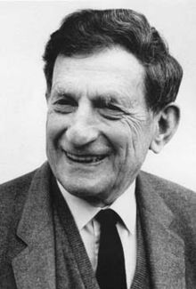
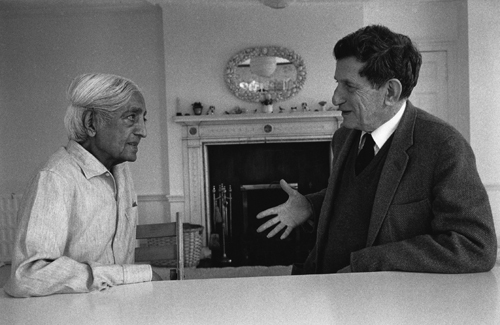
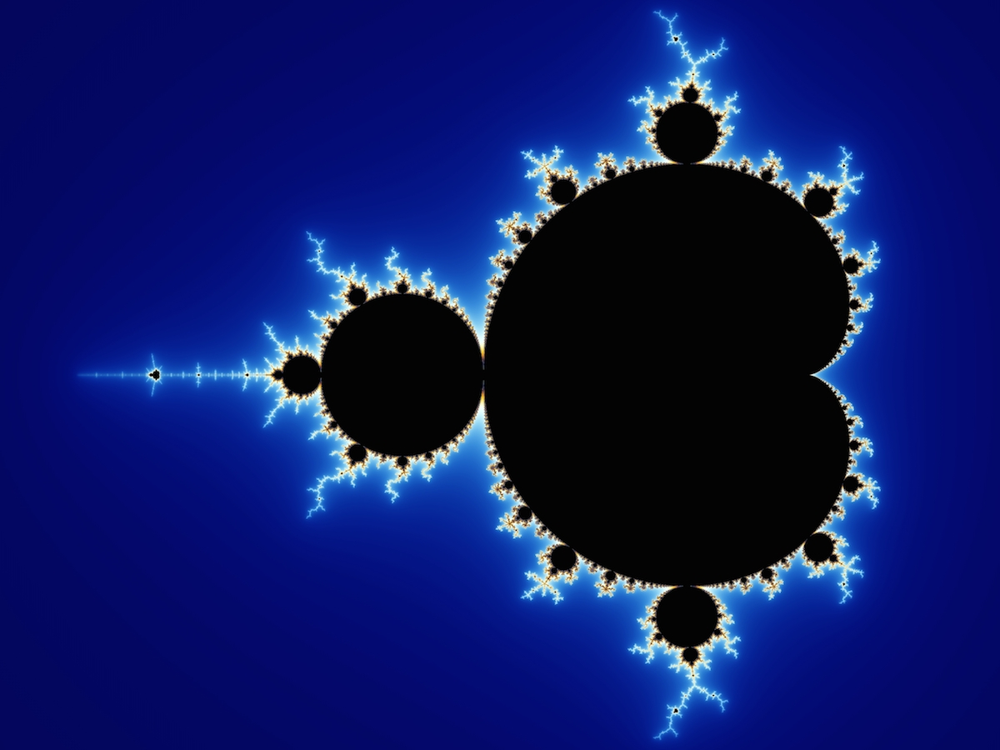
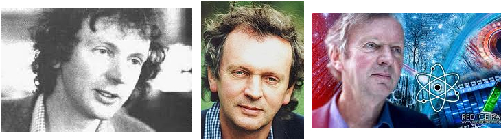

科学与佛学
Rupert Sheldrake：“科学目前的危机”
发表于 2012 年 07 月 13 日
译者评介：Rupert Sheldraked 是当代思想最为独立特行的生物学家。他的《Morphic Resonance》假说是如此的radical, 挑战现状权威，以至于当时知名科学期刊《Nature》的总编辑说他的这本书是近些年来最适合被烧的书，但他也不缺乏支持者，包括一些诺贝尔奖获得者，我读了他的书也觉得很在理喜欢。
下面是我对Rupert Sheldrake一个1992年的讲座“Morphic Resonance and Collective Memory”中关于“科学目前的危机”这一节的翻译。之所以翻译这一节是因为它很简洁地概括了西方哲学宗教对科学的哲学思想和方法的影响，科学哲学思想的演变, 以及自然定律的问题 。这个1992年的讲座提出目前科学处于危机中因为它两个最根本的理论模型－－永恒的自然定律和进化中的宇宙互相矛盾。
1992年以后的这二十年，新的科学进展和发现使得科学的危机不但没有消失，反而变得非常明显。宇宙在加速膨胀，非常规的暗物质暗能量占了整个宇宙能量的96%，现今的科学理论只能解释其中的4%，物理学自相对论量子力学以来的危机更大了。在生物学，人及很多动植物的基因库已被测序，但这反而挑战了DNA是生命本质的主流思想。Rupert Sheldrake在1990s提出“Morphic Resonance”的假设就是因为单靠 DNA主流的遗传学解释不了胚胎发育，基因库测序的完成更证实了他的先见之明。现代生物学在理论上正面临一场空前的危机，因为它用于解释生命的中心法则DNA-RNA-蛋白质看来并不那么坚实万能。在神经科学，也有越来越多的证据提示意识（consciousness) 并不象通常所认为的是由大脑产生的。
总之，我的认识是，跳出自己局限的科研领域，对科学主要领域的总体进展和前沿有所了解，就不会被科学技术的表面上的飞速进展迷昏了头，乐观地认为假以时日，科学可以发现真理，解释一切。事实上科学局限于可重复的物质领域，对不可重复的精神生命现象根本就不去或无法认真研究，即使在可重复的物质领域也面临理论上的巨大危机，现在看来科学（本质是用基于思想逻辑的科学方法）可以解释一切并最终达到真理的想法只是一种乐观的信仰罢了，科学自有它的伟大价值和适用范围，但不应该因其成就巨大就将它作为评定一切对错的标准，特别是物质科学方法不适用的精神心灵宗教现象。
Rupert Sheldrake：“科学目前的危机”
我认为自然界有内在的记忆，我们通常所说的自然定律也许更象是习惯。这个提议显然是极端的，有争议的和非常规的。但我觉得我们需要认真考虑它。原因是目前科学正处于危机中，科学的两个最根本的有关真实的模型已处于自相矛盾的状态。
1。永恒定律的模型
第一个模型是关于永恒的：真实永恒不变。这个模型已经主导物理科学很长世间了，从古希腊的毕达哥拉斯学派（the Pythagorean）开始。毕达哥拉斯学派认为数学的王国－－数字和比例的王国－－是永恒的真理，而我们所在的变化中的世界是这个永恒秩序的投影。柏拉图将这些想法融合进他那著名的有关永恒理念或理形的哲学。随着欧洲文艺复兴时期柏拉图主义的复兴，这些柏拉图式的理形或理念被整合到现代科学的基石中。
基督教的圣者奥古斯丁（Saint Augustine）所构造的新柏拉图主义认为，这些永恒的柏拉图式的理形是上帝头脑中的想法。对于现代科学的开山祖师们来说－－哥白尼，开普勒，伽利略，笛卡儿及其它人－－科学的任务就是去发现这些作为上帝想法的永恒的数学真理。上帝被想成一个最终极的数学家。直到今天，这个想法在数学家中仍然大受欢迎。
因此有关永恒的自然定律的思想有一个很强的宗教和形而上学背景。大多数科学家实际上并不谈论它，想当然的或下意识地接受它，这个想法已被建进了我们所知的科学方法中。任何实验应该能够在任何地点和任何时间可重复就从这个想法而来，是这个想法的具体应用。因为相信自然定律在所有的时间和所有的地点都是一样的，所以科学实验也应当在任何时间都能被重复。
当然，你实际上见不到或碰不到这些定律，E=MC2并没有被写在天空中，你也不能在石头下面发现它们。这些东西都是抽象的思想，不是由能量或物质构成的。事实上它们不是物理宇宙的一部分。它们是十七世纪以来构建进机械性科学的一个宇宙性的二元论：一面是永恒的定律，另一面是是这些永恒的定律规范管理着永恒的物质和能量。
2。进化的模型
西方科学的另一个根本假设是进化的模型，认为所有的事物都处于时间上的变化和发展中。这个想法不是来自希腊，而是来自我们所继承的犹太文化。
和大多数古代民族不同，犹太人认为历史过程涉及时间上的发展。大多数古代民族，象希腊人，印度人和佛教徒，相信时间基本上是循环性的，事情或事件仅仅是循环重复 . . .包括宇宙性重复的大循环。但犹太人强调历史过程的旅途性质－－原始经典的旅途就是犹太人经过荒野走出埃及和到达“ the promised land”。在犹太教和基督教有关世界大灾难或末日的文献中这个“promised land”成了“the Millennium”， 神的王国，将来历史会从此中终结。
这个想法随后在十七世纪被世俗化，产生了通过科学技术进展的思潮。进展的想法当然是从马克思主义到新时代运动（the New-Age movement）这样不同的思潮体系的基础。马克思主义认为历史会进化到国家消失。现在马克思主义国家已经调亡了，但历史并没有终结。整个新时代运动是另一种认为历史将会发展到某种新高潮的思维方式。
不管怎么说，这些最初来自犹太人的有关在时间上变化和发展的想法导致了人类进展的思想。到十八世纪末，大多数人都同意人类进展了，社会进展了，但人类以外的自然界仍被认为是静态不变的。到十九世纪中期，生物进化的思想得到认同。达尔文的理论被推广了，人类的发展被看成是一个更大的生物发展进化过程的组成部分。一些哲学家开始建议也许整个宇宙都在进化。
但是物理学家很快就反对这种说法。他们说宇宙不在进化，事实上它象一个慢慢用完蒸汽的，正在退化着的永恒的机器，迈向一个热动力学的热的死亡。因此那时一般认为宇宙在走下坡路而地球上的进化是一个向前进的发展，相当于一个无路可去的宇宙中的一个暂时性的波动。
直到1960s 物理学才最终采用了进化宇宙学。这是因为大爆炸理论的产生。大爆炸理论认为宇宙开始时很小随后便不断生长扩展，在其生长过程中自然会不断地形成新的形态和形状。大爆炸理论模型使宇宙更象一个生长发育中的有机体，而不象任何我们所知的机器。所以我们有了一个进化宇宙学，整个自然界都在进化，人类在生物进化的背景下发展，而生物进化又是极其广大的宇宙进化的一部分。
3。进化中的自然定律
因此，由于上面所描述的情况，我在下面所提出的问题直到1960s都没有出现。如果宇宙是永恒的，有关自然界永恒定律的思想是合理的；但如果自然界在进化，为什么自然定律不应当跟着进化？为什么我们应当认为宇宙是在一个从开始时就固定的宇宙性的拿破仑法典管制之下，而不是受进化性原则的管制？事实上一旦你开始思考自然定律这个问题你就认识到这是一个极端以人为中心的概念。在十七世纪，情况是很清楚的，神是宇宙的王者，他的法律适用于一切事物。他不仅制造法律，而且他是全能的，承担着全能的执法职能。
但是今天大部分科学家都不再把神引进他们的思考中。从科学的观点看，如果我们不能再认为神是宇宙的法律制造者，那么为什么我们还应当考虑自然定律的事情呢？就象英国作家C. S. Lewis说的：“说一块石头落到地上是因为它遵从一个定律使它形同一个人甚至一个公民” （“To say that a stone falls to earth because it is obeying a law makes it a man and even a citizen.”）。所以定律的概念具有很强的人类中心性。我认为最好是改变这个比喻而不是继续使用它。我所建议的比喻是习惯（habit)。
根据已经发生的事物事件和它们是多么经常地发生，习惯可以被构建到自然内。事物所呈现的规则性和自然界的有规则的形态也许是因为构造进自然的习惯所造成的。更进一步说，习惯受自然选择的影响，他们可以进化。只有成功的活动形态或形式才能够重复，而且只有重复的形态形式才能成为习惯。
“理论是灰色的，唯有生命之树常青。”
发表于 2012 年 07 月 13 日
“理论是灰色的，唯有生命之树常青。”句流传极广的明言，语出德国诗人歌德的诗剧《浮士德》，但我最早读到这句话确是因为徐迟的报道陈景润的报告文学《歌德巴哈猜想》。网友银桦用感性的，富有诗意的语言讨论了她对这句话的感触和理解，受其启发和触动，我也用我所理解的佛学来讨论一下这句美丽而又深刻，激励和影响了改革开放初期一代科学学子的哲语吧。
在今天的世界上，生活中，思想理论的作用无处不在，几乎重要到无以复加的地步。科学思想理论的发展使得人类可以登月潜洋，发明各种机器技术，人类的物质生活得到极大的进步，同时大规模杀伤武器也可以毁灭整个人类和地球。社会思想理论可以引起社会变革，天翻地覆，血流成河。以宗教教义，爱国主义，人道主义以及任何主义的名义进行的战争也都是思想。因此当二十世纪的伟大哲学家Krishnamurti 说思想是forever渺小的好像不好理解， 其实他是说当有限的思想理论试图了解无限的真实／真理时，它就变得非常渺小。他同时说思想发明各种各样的Utopia/理想国／政体来试图解决人类的问题，但由于思想的局限片面性，解决一个问题的时候会引起另外的问题，在思想的范围内永远解决不了人类所面临的问题。佛教在谈到以思想来面对无限的真实／真理时， 也是同样的说法：“穷诸玄辨，若一毫置于太虚；竭世枢机，似一滴投于巨壑。”。
“理论是灰色的”，因为它是有限的，片面的，基于过去的，机械的，无生命力的，无实体的，仅是一个用来理解真实的抽象的工具符号语言图像。即使理论在某一方面正确预测描述了真实，比较实用，它也仍然不是当前鲜活的真实，正像一个城市的地图和它所绘的城市不能等同一样，一幅树的画或照片不是那棵真实存在的树一样。
和我们父辈老师们相比，我们这一代人是非常幸运的，虽然经历了文革，没受正规的中学教育，但赶上了改革开放和中国科学的春天，受到了正规的大学教育，并随着出国潮来到科学发源地的西方国家留学做科研。那时大家可能都多多少少受徐迟的《哥德巴赫猜想》的激励和影响，想做一个科学家，做出重大发现或发明创造有价值的技术。几十年过去了，能实现这种梦想的可能只是少数人。还隐约记得徐迟的《哥德巴赫猜想》中说数学是科学上的皇冠，而哥德巴赫猜想是皇冠上的明珠。西方科学思想认为自然界遵循各种定律，而这些定律是由数学公式表达的，后来我们知道这些定律都是相对的，有一定的实用范围，也就是很有用的工具符号而已。然而数学在科学发展中的巨大作用仍使一些科学家惊奇于它的“unreasonable effectiveness in describing reality”而认为自然界是由数学语言写成的，认为数学定理在自然以外的柏拉图式的理念世界有真实的存在，这种想法甚至仍然是是今天理论物理学界的主流。
现代著名的数学家物理学家Roger Penrose 这样说：“I image that whenever a mind perceives a mathematical idea, it makes contact with Plato’s world of mathematical concepts…. when mathematicians communicate, this is made possible by each one having a direct route to truth…because each is directly in contact with the same externally existing Platonic world! All the information was there all the time. It was just a matter of putting things together and ‘seeing’ the answer….In their greatest works, mathematicians are revealing eternal truths that have some kind of prior ethereal existence.”。 我的数学本来不好，又做生物研究，数学用的不多，对这种说法感到很神秘。爱因斯坦并不同意这种看法，佛教则明确地说一切思维逻辑语言公式符号都没有独立的实体存在。后来读到了佛教徒Mathhieu Richard 和天文学家Trinh Xuan Thuan对这一问题的详细深入的讨论：The Grammar of the Universe, in《 The Quantum and the Lotus: a Journey to the frontiers where science and Buddhism Meet》。这坚定了我“ 理论是灰色的”没有独立实体存在的信念，数学也不例外。现代理论物理学界追寻描述世界的最后公式（M－theory)应该是徒然无功的。
象现代理论物理中一些看起来很奇怪不象是科学的理论反而大兴其道，成了主流，也和认为数学代表了真理有关。 例如Parallel Universe 理论，宇宙学家亚力山大.维勒金说：“有非常多的平行世界，在那里，戈尔(美国前副总统，后来在与小布什的总统竞选中落败)是美国的总统，而埃尔维斯.普雷斯利 (摇滚巨星猫王)还活着。”。 Stephen Hawking (霍金)也设想自己到了另一并行宇宙。然后，所发生的一切就如他在科幻小说《星际旅行》中所经历的一样：霍金和牛顿、爱因斯坦玩扑克，玛丽莲.梦露坐在他的旁边。“任何一个想得到的故事都会在其中的一个宇宙中发生，”霍金说，“肯定有这样一个故事，在其中我和玛丽莲.梦露结婚了。也有另一个故事，在那里埃及艳后克娄巴特拉成了我的妻子。” 这些东西听起来很荒谬不合常理，又无法用科学实验检验，但因为是从数学公式推导出来的，不但有人相信，反而成了主流。
数学家物理学家认为数学定理在自然以外的柏拉图式的理念世界有真实的存在是因为重大的数学发现常常是他们百思不得其解，而在做其他的事情时突然中灵光一闪，得到了他们苦苦追求的东西，新得到的公式理解或方法似乎完全超出他们本身的能力，不是从已知的世界来的，而象是从一个柏拉图式的理念世界来的。其实数学家的这种灵感和艺术家的灵感类似，都来自神秘的创造性，人的创造性从哪里来？佛教认为它来自无处不在的人人本具的灵知／菩提／自性／佛性， 每个人都在日用这个灵知而不自知，但这个灵知在每个人所发挥的作用却因每个人的思想习惯倾向而不同，而发生了扭曲变态，变态越少，智慧越高。科学家对一个难题百思不得其解，在现有的知识方法中找不到答案，不得不暂时放弃做其他事情，而在野营或散步时（甚至在梦中）并没有特意思考这个问题而突然灵光一闪，看到了答案，这时因为此时原来的思想在百思不得其解后暂停，对灵知的扭曲变态解除或很少，本有的灵知便给出了答案。看看大科学家的传记，几乎重大的科学创新突破都是这样来的，不需要假设一个独立于人／自然的理念世界。但这个灵光一旦变成公式理论思想，就成为过去了，就变成机械的，灰色的了。
生命的最后的，根本的源泉和动力来自于灵知／菩提／自性／佛性，它“寂然不动，感而遂通”，灵知在每个人所发挥的效力却因每个人的思想习惯倾向而不同，思想习惯倾向对其造成的扭曲变态越少，智慧之光既越能通透广大。要想使“生命之树常青”，就需要减少僵化的思想习气，让心对Truth 变得sensitive 和 vulnerable, 这样来自本体自性的活水才可使“生命之树常青”。
佛学简介
（注：这是大约2006年写的东西，仍不失其作为一个简介的价值，故而编辑一下贴上）
目录：
引子
一．佛教：说一漏万的简介
二．佛教和其它宗教哲学的不同
三．佛教的哲学：理解不了但觉无比深邃
四．佛教和现代科学
五. 结语
引子
直至两三年前，我还对佛教的真正内容不了解，把它当成是一种普通的宗教。成长于文化大革命时期，所受的多是西方来的马列唯物主义无神论的教育，记得在小学课本里还学过东方文化中少见的无神论，汉代王充的人‘死而精气灭，灭而精气休，休而成粪土，何故为鬼？’。在这种教育下，自然认同宗教是精神鸦片，佛教也就是这众多精神鸦片中的一种罢了。那时一切宗教都被打烂了，毛主席自己天天读古书，却不让中国的普通人民读，无机会接触佛教，好在他老人家额外开恩，允许《西游记》发行，才接触一点文学化的佛教的东西。那时对佛教的印象就是烧香拜佛求运求财迷信，觉得出家学佛的人都是因事业生活爱情上的挫折而逃避社会，很消极。佛寺里和《西游记》里有众多的佛，菩萨和神，感觉佛教里漫天神圣，也不知道该拜谁，只知道佛祖法力无边，孙悟空无论如何也跳不出如来佛的手掌心，另外就是佛教讲究轮回和因果报应，如此而已。后来打倒四人帮，中国科学的春天到来，相信科学，相信科学和宗教不相容，来到美国做科研十几年也与佛教无缘。但人过四十，对科学及科学的局限性了解多了，知道现在的物质科学再怎么发展也解决不了生从何来死到哪去的人生问题，顶多使我们生活的无比便利，多活几十或几百年甚至到外星球游玩，但生老病死情感痛苦总是免不了的。另外就是科学和宗教并非是那么水火不相容，很多科学巨匠也都有各自的宗教信仰。人活在这个世界上，除了食色性这些物质生物性的需求外，还有宗教性这样的精神需要，当然这种精神需求在各人程度相差很大。宗教性的需要，就是人类心灵对真理永恒，或圆满，或至善，至美，至真的渴望与追求。人生有许多非人力可补救的缺憾和迷茫，悲哀和苦恼，在这个短暂和迷茫的人生中，人类需要心灵的依托和归宿，这也就是国家朝代兴衰了多少回，而各大宗教却历千年而不衰的原因。爱因斯坦曾对人类这个尴尬的处境作了描述：“What an extraordinary situation is that of us mortals! Each of us is here for a brief sojourn; for what purpose he knows not, though he sometimes thinks he feels it.”（我们这些凡人的命运是多么奇特呀！每个人在这个世界上都只作一个短暂的逗留；目的何在，却无所知，尽管有时自以为对此若有所感。)。
对宗教不再完全抵触后曾与基督教和圣经有很多接触，虽然对耶稣基督的救世行为和博爱精神很崇敬，但多年的科学教育使我无法仅凭信仰就和圣经产生共鸣。一个偶然的机会读到了一本介绍佛教的小册子，这使我认识到真正的佛教和我原来想像的完全不同，如佛教充满哲学，认为世间一切都是由因缘而起，并无主宰（既无全能的创造一切的上帝），讲究实证不鼓励迷信及佛教与现代科学不冲突的说法引起了我的好奇心。我觉得一个和现代科学不冲突而又能对科学所解释不了的东西提出解释的宗教哲学是值得好好研究学习的。近两三年读了一些介绍佛教的书和一些注释的佛经，现在就把我的一些认识理解写一写和大家分享。不过首先声明我还不是佛教徒，我在这里所写的仅是一个受过现代教育的好奇者对佛教的浅解，无非是读书过后的拾人牙慧，仅用浅字不足以形容其浮浅。蠡（读li)是贝壳的意思， 蠡测，就是用贝壳杖量大海，从南怀瑾先生的《禅海蠡测》书名抄来，用蠡解来形容下面这些东西的浮浅就比较合适了。
一．佛教：说一漏万的简介
佛教在世界上的存在形式大致有三种。一是宗教的佛教：具备各种宗教仪式，如烧香拜佛，求官求运求子求财，民间大众的佛教大都如此，主要是信仰或迷信，对佛教真义并不一定了解。更有甚者，有人打着佛教旗号抖酬私货或是窃取佛教的一些内容而自创教派，那就离真正的佛教更远了。二是学术的佛教：佛经里面充满哲学和心理学，如果不是真修实练的佛教徒，仅凭兴趣研究佛教佛经，那就落入这个范围了。三是传统的或纯正的佛教：也就是佛陀释迦牟尼的教导，通常叫做佛法。佛教徒坚持认为佛法既不是宗教，也不是哲学，而是宇宙人生的真相。
佛是从印度梵文音译而来，汉译为对宇宙人生的真相透彻了解智慧圆满无缺的‘觉者’。两千五百多年前，佛陀释迦牟尼为了发现解脱人世间痛苦的方法，求得宇宙人生的真谛，毅然放弃王位出家。他遍修参研上古及当时的各种宗教哲学学术及其修证方法，认为都是不究竟的学问，便独自进行一番苦行修证，最后终于在菩提树下睹明星而悟道－－透彻了宇宙人生的真相。 但佛陀悟的道也太难懂了，他觉得当时的人懂不了便想接着进入涅槃 （也就是离开这个世界），说：‘止，止，吾法妙难思’（算了，算了，我的法太玄妙，这个世界的人想都想不到，不会懂得的。），要不是梵天一再请求，佛陀就不会住世讲法了。佛陀这一住世就是四十九年，象孔子一样带着弟子周游列国，到处说法，他的弟子们把他讲的话会集成书，就是佛经，近万卷，分了义经和不了义经，为不同根器悟性的人所讲。了义经（如《楞严》《楞伽》《圆觉》《华严》《法华》等）里充满哲学的概念词汇，讲的是宇宙人生的究竟的大道理；不了义经则多是比较浅显的从纯信仰角度入门的说教，因时因地因人而讲，是相对的不究竟的道理。今日流传的《大藏经》里除佛经外还有很多‘论’（学佛者经验心得）和‘律’（佛教的戒律）。面对这么多的佛教经典佛教徒该怎么办呢？ 佛教里有四个原则是：依法不依人，依经不依论，依了义经不依不了义经，依智不依识。佛教认为只有成佛才会智慧圆满，论是智慧尚未圆满的菩萨，僧人和居士所写，对佛法理解有差异，形成不同的宗派观点，因此有差异时要依经不依论 。关于依智不依识是指佛法是真正的大智慧之学，这种智慧是不可以用我们的普通意识思维去推测的。另外，语言是不完美的，真正的佛法或道无法用语言说清楚，因此佛说法四十九年，临离世的时候说他什么法都没说，在《金刚经》里也说佛经佛法是渡河的船，渡了河悟了道就要把船丢掉，不要执着。‘法尚应舍，何况非法’，因此佛教是不鼓励迷信佛经的，怕形成法执，要学佛者通过修行实践自己去体验证明佛经里的东西。
佛教有那么经，它最基本的内容是什么呢？其实那么多经和那么多方法（法门）都是从不同角度不同途径告诉人类它所认为的宇宙人生的真相及认识这个真相的方法途径，了解我从何来，到那里去，宇宙众生的本质。佛教通常分为小乘佛教和大乘佛教。流向东南亚各国的南传佛教，大体是以小乘为主的。小乘佛教认为人生都是以苦为乐，受制于身体和情绪，因此要超脱轮回，只以精神形式存在，寂静常乐 （涅槃），不来人间受苦了，注重自我解脱 。大乘佛教认为小乘的寂静常乐 （涅槃）不是究竟，智慧不圆满，在小乘的基础上再做大乘道的菩萨才能获得究竟圆满的智慧。菩萨是‘觉有情’的意思，既是自觉觉他的慈悲救世的修道得道者 。大乘的行为是身入世而心出世，象莲花一样‘出污泥而不染’，以救世救众生的大愿为其中心守则，以获得心自解脱的大智慧为究竟 ，智慧层次上则有十地菩萨之说。传入中国的佛教大小乘并列，而以大乘为重。中国佛教的各宗，如禅宗，密宗，净宗，天台宗，华严宗等等都是大乘宗派。
说到佛教，不能不介绍‘般若’这个佛教专有名词。我无能力解释，下面这段文字是丛南怀谨先生的《禅宗与道家》中搬来：｛般若为梵语，如用中文的译义，等於智慧，但中文的智慧，往往与聪明相通，聪明在佛学上，被称为“世智辨聪”，是由於感官的灵敏，和耳聪目明而来，并不足以代表般若内涵的智慧。般若的智慧，有五项内义：一为实相般若，是证悟宇宙万有生命的本体，与心性根源的智德。二为境界般若，是由心性本能所生起的各种差别境界，包括精神世界的种种现象。三为文字般若，是由智慧所发出哲学的文学，与语言的天才。四为方便般若，是智慧运用的方法，包括所有学术知识的范畴。五为眷属般若，概括由前五度而来的道德行为的德性｝。 六度是大乘的修行体系，前五度是布施，持戒，忍辱，精进和禅定，第六度才是般若，要获得般若智慧是实实在在地比登天还难，对圣人来说都是可望不可及，何况普通凡人。 从达到般若的修证途径上，又可分为喜欢简捷明了而厌于分析的，直达般若的性宗或空宗，如般若宗和直指心性的禅宗，喜欢审问而注重逻辑思维的，便先从世界上看得见摸得着的东西（‘有’）开始分析，最后到达无相无形的般若，如唯识宗。佛教的唯识理论比较容易和西方哲学，心理学，逻辑和科学相交流。玄奘法师当时虽也将唯识学介绍到中国，但因中国人的思维习惯爱好，结果重空灵的禅宗大方光芒，而讲分析逻辑的唯识宗没有得到发扬广大。
另外，佛教起源于印度与古印度人的民族习性很有关系。 梁漱溟先生在其《东西文化及其哲学》中将世界文化分为三大系，既西洋，印度和中国。西方人特别注重物质，印度人特别注重精神，中国人则介入二者之间，比较中庸实用。上古的印度，各种宗教哲学思想纷呈，被称为万教之国，对于世界有无主宰，一元，多元，唯心唯物等等哲学问题已是无所不具，甚至有可能影响了古希腊的一些哲学家，如提出原子论的古希腊哲学 Democritus就曾到过印度和古印度哲学家交流 （Page 38,Charles Van Doren “A History of Knowledge: Past, Present, and Future”. Ballantine Books, 1992）。在修炼方法上更是千奇百怪，如苦行和以身喂虎等等，对于西方人和中国人来说，这实在是不可思议的事情，但既使在今天的印度，鄙视物质的苦行者并不少见，因此有人说印度是一个过去，现在和未来融合在一起的国家。佛陀归纳了印度上古传统宗教的轮回之说，提出了‘三世因果，六道轮回’的生命现象论，提倡众生（包括一切有灵知之性的生物）平等，这和传统婆罗门教的等级观念已完全不同，阐述了与其它宗教哲学不同的宇宙观，世界观及形而上的本体论。打坐入静是佛教采用的修行方法，其它宗教哲学也用，但入静后的方法层次则和其它宗教不同，所达到的智慧不同。其它的宗教哲学也会打坐入静禁食禁声等等，也讲轮回（如柏拉图《理想国》第十章中讲到的轮回），但他们的哲学智慧和方法和佛教还是有很大不同的。佛教在印度的衰落与穆斯林的大举入侵有关，以佛教的原则不可能象基督教那样和穆斯林以牙还牙，于是佛教流转传入中国，西藏，东南亚，朝鲜和日本，而在其诞生地印度，传统的婆罗门教再度兴起，佛教则几近消亡。佛教在近现代传入西方，在西方已拥有众多的信奉者，很多近现代的西方哲学家和物理学家都受了佛教思想的影响，英国历史学家阿尔诺德·汤因比甚至说：“二十世纪最有意义的事件之一也许是佛教到达西方。”
二．佛教和其它宗教哲学的不同
佛教和常见的有神论宗教（不管是一神还是多神）明显不同，它不认为宇宙世间有主宰，即不承认有一个全能的创造一切的上帝，其宇宙观则是空间无际时间无尽， 认为宇宙既无开始也无结束， 世间一切都是由因缘而起，没有无缘无故的事，一切都是因果，因果关系若不明显则是因为对过去的原因不明，佛教讲的是过去－现在－未来三世因果， 因此有些西方人甚至说佛教是无神论。佛教里面的佛，菩萨和天神都是人做的，众生（如佛和蚂蚁）在本体上一概平等，只是智慧觉悟程度不同，不存在一个高高在上的神，这真是最彻底的平等观。和其它主要靠信仰的宗教不同，佛经里充满哲学，讲究思辨实证，不鼓励迷信，为了破除法执，有些禅宗和尚甚至‘呵佛骂祖’。
佛经里虽然充满哲学，涵盖所有的哲学概念命题，但它又有宗教性的一面，尤其在实践上和西方的哲学明显不同。西方的哲学家主要在自我的意识里面进行尽可能客观的逻辑思辨，靠逻辑思维构造了一个又一个的哲学体系，但又无法检验各个哲学体系的真假，最后产生可以检验重复的物质科学，形而上学精神方面都不管了，放任科学和宗教去解释。 佛教徒则试图完全放弃自我思维，靠打坐入静来和形而上本体相融合， 然后获得关于宇宙人生的知识智慧，佛教有一整套的实践方法和认证检验手段，象是一门拿自己的一生做实验的精神实验学科，只是不象物质科学那样谁都可以去做验证，重复出来给大家看，普通人既理解不了也很难知道他最终的实验结果如何，但我们也不敢因此而轻视它，现代科学的方法手段只适用于物质，其成就主要在物质方面，对精神方面所知甚少，很可能精神现象只能用类似于佛教的方法手段才会取得突破，而佛教这个用人生实践着的活的哲学已积累了两千多年的经验。
三．佛教的哲学：理解不了但觉无比深邃
说到佛教的哲学只觉得无比深邃理解不了，理解不了也就算了，为什么自找麻烦去研究这些老古董呢？ 这是因为现代科学的发现，如量子力学，相对论和现代宇宙学，不但没有对佛教的物质宇宙观形成挑战，反而更证实了它的先见之明。而对于现代科学回答不了的物质精神问题，佛教里也早就有了它独成体系的解释。如果佛学的物质宇宙观和现代科学不冲突，那我们就不能对它其它方面的科学尚无法证伪的理论轻视。为什么一个两千多年前的宗教哲学会知道连现代科学都不知道的东西实在令人费解，这只能从佛教的哲学和认识世界的方法去找答案。佛教讲物质宇宙空间则远超今日宇宙学所知的极限，讲物质的细微则远超今日的物理科学，和相对论量子力学不冲突，讲万有起源则有心物一元的唯识理论，讲生命现象则有十二因缘和三世因果六道轮回的生命论，讲伦理则连圣人也达不到标准。马蒂厄·里卡尔 和让—弗朗索瓦·勒维尔的《和尚与哲学家—佛教与西方思想的对话》对于现代人了解佛教哲学很有好处，它将西方哲学和佛教哲学作了很好的对比，相信很多常见疑问在这本书里都有提问和解释。如果想了解更深的话， 我觉得南怀瑾先生的《禅海蠡测》和《楞严大义今释》解释的很好，容易懂一些。佛教的形而上的本体论可能是最难理解的，再把南怀谨先生的《禅宗与道家》中容易懂的几段搬来：
｛印度上古的宗教哲学，与各派哲学思想，对於宇宙生命来源的争论，不但众说纷纭，莫衷一是，而且各用因明(逻辑)的根据，建立学说的体系，但始终不离有主宰、无主宰、一元的、多元的、唯心的、唯物的范围。其实，综合古今中外世界人类文化最基本的探讨，仍然不外这些问题，几千年来的时间，全世界的人类，由宗教到哲学，由哲学到科学，对於人类自己切身的生命来源问题，仍在寻求、迷惘、争辩之中，看来真是人类文明的一大讽刺。
印度上古宗教哲学，对於宇宙人生生命真谛的追求，各自别有见地，各自别有安心立命的方法，而且都认为已经得到清净解脱的究竟法门；有的认为最後的灵性与大焚合一，便是至道；有的认为灭绝情欲与思虑，便是究竟；有的认为不用感觉而保持灵性的不昧，不用思想而不失灵知，便是大道；也有认为人死如灯灭，只图目前的享乐，就是真实；甚之，有人认为我已得到最清净的解脱境界的涅盘，凡此种种，不胜枚举。释迦宣扬教化，对於这些问题，作了一个调和裁定的结论，他认为宇宙万有生命的现象，都是因缘集合而生，其中并无一个能主者的作用，缘生而起，缘尽而散，而宇宙生命最高(或最终、最初)的功能，是心物同体的，如果你用宗教的观念，从神圣的角度去看，也可以称他作佛、或天、或主、或神、或任何种种超人格化的神圣称呼；如果从理性的角度去看，也可以称之为性、或心、或理、或道、或法界等等称呼；倘使从人类习惯观念的角度去看，也可以称他为法身，为生命本源的无尽法身等称呼。总之，从体上来说，他是以空为体的，从相上来说，他以宇宙万有之相状为相的，从用上来说，宇宙万有一切的作用，都是他的起用，他譬如一个大海，海水起的波浪，便如因缘所生的宇宙世界，波浪上的泡沫，便如因缘所生众生各各形成的个别自身，虽然波浪泡沫现象各有不同，始终不离一个水的自性，但譬喻只限於比喻，譬喻并不就是本体的自性。
众生世界，因为不能证到自性本体的究竟，便舍本逐末，而各各执著自己的所见、所知处，认为那就是究竟，於是各依主观，形成世间的差别知见，其实，主观、客观，同属於思维意识的分别作用，思维意识的所知所见，自身本来就凭藉著身、物世界的因缘而起作用，它的本身便是虚妄不实，不足以定真理的有无，存在与否；只要人能从自心寂静思维意识上去做工夫，渐渐就可了知身心的作用，也如现象世界一样，变迁无常，虚妄不实，从此节节求进，层层剖析，尽人之性，尽物之性，达到身心宇宙，寂然不动的如如一体，不住於有，不落在空，便可证得宇宙人生的最初究竟。释迦又另命名他为“真如”、或“涅盘自性”、或“如来藏性”；“如来”，从广义的说，便是宇宙生命本体的别名。所以他认为说空、说有，都非究竟，唯一的方法，是达到身心寂静，再在此寂静中去求证，但他是“不可思议”的；所谓“不可思议”，是修证方法上的术语，认为不可用习惯的意识思维去思想、去拟议，便可以到达的，因此“不可思议”一辞，不可错作“不能思议”的误解。｝
四．佛教和现代科学
现代科学的巨大成就使得人们相信将来只要科学发展，一切都会搞清楚，我原来也这么想，但对科学的方法进展了解深了以后，觉得这只是一种乐观的信仰，现代一些理论物理学家想要发现一个能解释一切的理论或公式（The M-theory)便是这种信仰的例证。其实现代科学的成就主要是物质方面的成就，其方法手段也主要适用于物质，许多精神人文学科前面都加上科学二字，是不是真的科学或是不是不加科学二字就不正确也很难说。即使在物质方面，现代物理学也揭示了用科学获取知识的极限：在宏观上无法知道物质宇宙产生以前的知识，只可用理论和公式推测，主要依赖数学，但数学真是绝对的吗？好象不是，因为几乎没有无前提的数学定理，若前提错了推论再严密也不会和事实相符。在微观上因‘测不准’原则而无法获得客观全面的知识，现代天文宇宙学也揭示出现代科学理论的局限：这个宇宙中的能量70%是无法测知的黑能量，26%是看不见的黑物质，只有4%是我们所熟悉的可见物质。
佛教对物质宇宙和生命的解释和现代科学纯唯物的观点不同，虽然常被看成宗教迷信，其实完全可以当成另外一种与物质科学不同的，求得知识智慧真理的方法，可以对现代科学提供许多有益的启示。 古老的佛学和相对论／量子力学／现代宇宙学的发现有许多惊人的相似，但又超越相对论／量子力学／现代宇宙学的观点 。佛教和现代生物学神经科学的关系也是如此。随着科学的进展，现在看来理解不了的佛学观点将来被证实是完全可能的。因为牵扯的面太广，佛教和现代科学的更具体详细的比较不适合放在这篇简介里。未来将专文讨论比较佛学和相对论／量子力学／现代宇宙学的关系，佛学和现代生物学神经科学的关系，特别是佛学和现代科学对意识起源的看法。
总之，现代科学因为专著于物质，而人和宇宙都有非物质的一面，虽然已取得巨大成就，难免片面。佛教和科学的目的完全不同，不注重现代社会所重视的实用物质技术，但佛教的哲学方法理论是可以对现代科学了解世界更深层的真相提供很多启示的，事实上西方很多成就巨大的科学家都已注意到佛教，并已经在和佛教交流，达赖喇嘛的书《The universe in a single atom: the convergence of science and spirituality》就描述了这些事。我想信西方的科学和东方的佛学相交流会使人类的文明前进一大步， 这大概是英国历史学家阿尔诺德·汤因比为什么说：“二十世纪最有意义的事件之一也许是佛教到达西方。”，与文化的交流及对真理的认识传播相比，国家朝代的兴衰实在是小事情，正所谓‘是非成败转头空，青山依旧在，几度夕阳红’。
五.结语
佛法大意最简单地说就是：“诸恶莫作，众善奉行，自静其意，是诸佛教。”。 “诸恶莫作，众善奉行”是其他宗教哲学也都提倡的，佛教与他们不同的是通过 “自静其意”达到智慧的方法原理及智慧的深度和广度。原理就是佛经中讲的宇宙人生观本体论，方法很多，概括起来称为“戒定慧”三学，不了解佛教的人理解不了。把佛教理解成一个和其他宗教一样只是劝人向善，活得平实幸福的宗教那就错了，这样佛教和其他宗教或现代的正性思维心理学（Positive Thinking)也就没什么区别了。佛教的中心是获得智慧的解脱， 要明白宇宙人生的真相，了生脱死， “诸恶莫作，众善奉行” 提倡善和爱只是修行有成就所必须的基本课。这个智慧是通天彻地了生脱死的大智慧，与常识相反，现代科学的发现对它也行不成挑战，相反，佛学可以为科学了解世界更深层次的道理提供很多宝贵的启示。佛法是哲学中的哲学，非常深奥难懂，我也不懂，但不敢轻视。如果你觉得这是纯粹的假大空，那就不要理它就是了，佛教从来不会强要人信或接受它的观点的。学佛这么难，要求你放弃自我和世俗的东西，这世界有几人能做到，在当今这个崇尚物质的社会更难有市场，只能看各人的缘分了。
一个对世界人生足够好奇的人一定会试图丛科学哲学和宗教里寻找答案的，我的好奇心在接触佛学后得到了彻底的满足，岂止是满足，完全是望洋兴叹。以我肤浅的了解，觉得佛教对宇宙人生的解释比其他的宗教哲学及科学都来得高明。对于想进一步了解佛教的人，既多又难懂的佛经的确是个大挑战。南怀谨先生在他的《楞严大义今释》的后记中是这样写的：“芸芸众生，茫茫世界，无论入世或出世的，一切宗教、哲学，乃至科学等，其最高目的，都是为了追求人生和宇宙的真理。但真理必是绝对的，真实不虚的，并且是可以由智慧而寻思求证得到的。因此世人才探寻宗教的义理，追求哲学的睿思。我也曾为此努力多年，涉猎得愈多，怀疑也因之愈甚。最后，终于在佛法里，解决了知识欲求的疑惑，才算心安理得。但佛经浩如烟海，初涉佛学，要求得佛法中心要领，实在无从着手。有条理，有系统，而且能够概括佛法精要的，只有楞严经，可算是一部综合佛法要领的经典。明儒推崇此经，曾有‘自从一读楞严后，不看人间糟粕书’的颂词，其伟大价值可以概见。”。楞严经是宇宙人生真理探原的经典，是入门悟空的一部书，也是抱本修行，闭关修行一直到证果跟在身边的一部书。昔日憨山大师有言“不知法华，则不知如来救世之苦心。不知楞严则不知修心迷悟之关键。不知楞伽，则不辨知见邪正之是非”。想对佛法的真正精要有个深一点的了解，那就多读读南怀谨先生的《 楞严大义今释》吧。如果还太难， 李炳南先生的《佛学十四讲》非常好，更通俗。另外，我对于佛教和科学西方哲学，佛教和其他宗教哲学如儒学（包括理学）道家道教，及佛教中各宗（如禅宗密宗净土宗等等）的关系一直很迷糊，读了南怀谨先生的《禅海蠡测》后便觉得清楚多了。罗嗦这一段的原因是想和也喜欢佛学的朋友交流学习体会。
东抄西搬，不懂装懂，可惜水平太低，题目也太难了。知道写的不好，那也没办法，主要是想说明，佛教实在不简单，懂了科学哲学更容易了解佛教的道理，对佛教了解多了就不敢轻视它了。
参考文献
梁漱溟：《东西文化及其哲学》， 《中国文化要义》和《 人心与人生》。
南怀瑾：《禅宗与道家》，《金刚经说什么》，《如何修证佛法》，《 楞严大义今释》和《禅海蠡测》。
李炳南：《佛学十四讲》。
马蒂厄·里卡尔 和让—弗朗索瓦·勒维尔：《和尚与哲学家—佛教与西方思想的对话》。
达赖喇嘛：《The universe in a single atom: the convergence of science and spirituality》。
《心智科学：东西方的对话》 （布达喇嘛与西方科学家在哈佛大学心智科学研讨會的精彩内容）
陈兵： 佛法与现代文明。
Bill Bryson “A Short History of Nearly Everything”. Broadway Books, 2003.
Charles Van Doren “A History of Knowledge: Past, Present, and Future”. Ballantine Books, 1992.
Einstein’s Legacy: Challenges in Physics. Science 11 Feb. 2005, 307, 865-890.
Stephen W. Hawkings “A Brief History of Time: From the Big Bang to Black Holes”. Bantam Books, 1988.
佛教的宇宙时空观
初稿于 2012 年 07 月 13 日 修订更新于2021年 2 月
佛教的宇宙时空观以现代天文学的最新进展都无法相象。已成主流得了诺贝尔奖的大爆炸理论在佛教的宇宙时空观面前都有点象坐井观天，其他宗教哲学的宇宙观就更简朴，笼统和神话化了。佛教认为宇宙即无开始，也无结束。大千世界（相当于现代宇宙学的一个星系）的生生灭灭相当于大海上的无数水泡的生灭。非常奇怪的是一个二千多年前的宗教哲学所描述的宇宙在空间广度上竟然都不逊于现代宇宙学，甚至有过之而无不及。
佛教的无量无边宇宙观千年之前就已经白纸黑字印在佛经上（《华严经》），只是在现代宇宙学观测到广大的宇宙后才变得容易理解。虽然有莲花，香水海和佛这样的宗教比喻文字，但总的来说其文义是清楚的，不是摸棱两可的预言。例如，它说一日月为一小世界，也就是说一小世界相当于一个太阳系，一千个太阳系，算是一个小千世界；一千个小千世界谓之一个中千世界；一千个中千世界谓之一个大千世界，大致相当于现代天文学一个星系（Galaxy, 如银河系含有一百多亿个类似太阳系的恒星系统）， 接下去讲无量数的大千世界构成一个世界种，无量数的世界种构成华藏庄严世界海。再接下去，若以华藏庄严世界海为中心，在它的八方上下可以标出十个世界海，它们都与华藏世界海相等。 这些无量的世界都安住在空中。“大千世界海中泡， 一切圣佛如电拂。”：意思是说如果将本体 (本体是哲学上产生一切的那个最初源泉）比喻成大海的话，一个大千世界只相当于大海上的一个水泡，而一个佛的出现只如闪电一般。
关于我们所在的娑婆世界在无限宇宙中的位置，《华严经》说它在十方世界海中的华藏世界海中的普照十方炽燃宝光明世界种，此世界种中有二十重不可说微尘数的世界，而娑婆世界位于这个世界种的第十三重(层)，在娑婆世界的周围则有十三佛刹微尘数世界周匝围绕。十三佛刹微尘数是个巨大的数字，等于是把十三个银河系碎成微尘，然后再数数所有的微尘后所得到的数字。


至于佛教为何能知道如此广大的宇宙世界，其方法理论显然是现代科学所不能理解的，下面就以我对佛学的理解来猜测一下。《金刚经》说佛有 “肉眼、天眼、慧眼、法眼、佛眼”。肉眼类似看到我们普通人所看见的东西，天眼看到的某些东西类似今天的天文学天文望远镜所看到的东西，“慧眼、法眼、佛眼”的境界太深，几乎是全知，这里无能啰嗦，只聊一下与现代天文学类似的天眼。在《华严经 — 华藏世界品》普贤菩萨以天眼描述华藏世界的形态时所说的很象是太空望远镜所看到的星系或星系团的形态：“诸佛子。彼一切世界种。或有作须弥山形。或作江河形。或作回转形。或作漩流形。或作轮辋形。或作坛墠(shàn)形。或作树林形。或作楼阁形。或作山幢形。或作普方形。或作胎藏形。或作莲华形。或作佉勒迦形。或作众生身形。或作云形。或作诸佛相好形。或作圆满光明形。或作种种珠网形。或作一切门闼形。或作诸庄严具形。如是等。若广说者。有世界海微尘数。”
至于里面所描述的华藏世界的结构，用的是风轮／摩尼／宝珠／香水海／宝焰／金刚／莲花／须弥山／珠网等等的术语。现代人一般都把它们当成无实际意义的宗教文学性语言。它们确实是宗教文学性语言，但我猜测有实际的含义，佛陀／普贤菩萨在两千多年前向当时的人描述他们用天眼看到的广袤宇宙也只能用这些当时的人能懂的语言了。既然整个宇宙里70%是不可测的暗能量，23%是不可见的暗物质，只有4%的能量以普通可见物质的形式存在，既然银河中心的中心据说是个超级大黑洞，银河系的质量大约90%是看不见的暗物质，只有10%是可见的普通物质，那么我猜测风轮／摩尼／宝珠／香水海／宝焰／金刚／莲花／须弥山／珠网等等宗教文学性语言实际上是指宇宙结构组成，而且绝大多数都是现代天文宇宙学推测应该存在却看不见的暗物质组成的宇宙结构。佛教的大成就者只是以一种与现代科学不同的机能方式看到了世界宇宙，而现代天文宇宙学仅仅是处于寻找暗物质的开始。
佛教的时间单位是劫：劫的算法有几种说法，有分为小劫、中劫、大劫3种的，一种算法如下：自人寿十岁开始，每百年增寿一岁渐增至八万四千岁为止，这段期间称为增劫， 然后再每百年减一岁至十岁为止，这段期间称为减劫， 如是一增一减共二十回，为一小劫，二十小劫为一中劫，经成、住、坏、空，四中劫为一大劫，即一大千世界从形成到毁灭的时间。1小劫可换算为一千六百七十九万八千年；20小劫为1中劫，即三亿三千五百九十六万年；1大劫等于4中劫，即共计十三亿四千三百八十四万年。另一种说法是成、住、坏、空四劫各有二十中劫， 这样一个大劫就有80中劫， 总计两百六十八亿八千万年。 依此推论，我们现在所处的时代应该人寿百岁时的减劫时代。
佛教中还有一个非常大的数量单位叫阿僧祗，一个阿僧祗等于10的47次方，而一个阿僧祗劫等于一大劫乘一个阿僧祗，这基本上是一个无限长的时间，等于134384×10的52次方年。佛经上说我们现在所处的宇宙时代是贤劫，在贤劫中将有一千位佛出世，释伽牟尼佛是第四尊佛，我们的时代现在是他涅磐后两千五百多年，下一尊佛，弥勒佛将在五十六亿七千万年后再降生到我们这个世界，那时银河系都应该毁灭重生了好几次了。这当然都是宗教的范围说法了，无法想像考证其真实。
形而下的时空既是如此广大漫长，但证入形而上本体的佛教大成就者（佛菩萨）在华严境界中却是“十世古今，始终不离于当念；无边刹境，自它不隔于毫端。”。意思是说，此时没有时间概念，过去现在未来一时并承，所有的一切都在一念当中；也没有空间存在，无量的世界都如在眼前。
佛教说一个世界形成的原因之一是将要形成这个世界的众生的共业，也就是说这和“人适原则”（Anthropic principle) 是一致的，佛教的宇宙观是以有情生命为中心的，不是物质产生生命，而是生命产生宇宙。佛教里有宇宙性的成住坏空的大循环，有火／水／风三劫之说，初次读到时非常震惊，连整个星系都毁坏了，但那只是在物质的层面，人类的本质（姑且叫灵魂）不是物质的，不会毁坏，物质世界毁坏了会再形成新的世界，灵性生命会永远不停地生生死死的轮回或进化。佛教关于火／水／风三劫的说法和天文学观察到的天体演变有一些相似的地方。照佛教的说法，人的思想行为形成看不见的业力，自然环境与人的思想行为连在一起，这个大的自然环境是共业（即所有人类的思想行为的集合，佛教叫业力）所成， 整个人类的思想行为不变，自然环境就会按现有的业力变化，共业好像是个定数，除非有非凡人物领导人类改变，个体无能为力。人心（即思想行为）不变，物质世界的变化就会按照已有的业力发生，不可阻挡。科学技术对大的自然变化也无能为力。
佛教说我们人类所在的这个世界是“娑婆世界”。“娑婆”是梵语的音译，意为“缺憾堪忍”，此世界众生业力深重，安于十恶，堪于忍受烦恼苦难而不肯出离，故“娑婆世界”又可意译为“忍土”，被称为 “五浊恶世”，是“极乐世界” “净土”的对立面。
“五浊恶世”，是指我们所在的世间。所谓五浊: (一)劫浊。劫浊乃时代总称。人寿本为八万四千岁，后因德薄，而寿命亦每百年递减一岁，减至二万岁时，即步入劫浊。可知人寿自二万岁至十岁之间，再由十岁至二万岁之间，都是劫浊时代。(二)见浊。充满五种‘利使’的思想：(1)身见: 切实为自己，为自身。(2)边见: 对人对事对物，思想都有限度，不能运心广被。(3)戒取见：各自坚执定立自我的主张等。(4)：见取见，以自己主观概于一切。(5)邪见：善恶是非颠倒等。(三)烦恼浊。充满五种愚钝的思想：贪心、嗔心、愚痴、我慢、多疑。(四)众生浊。肉质生命具备有五阴所生的各种痛苦与烦恼。众生互相欺诈争夺, 损他利己, 去宁静之境日远, 是名众生浊。 (五)命浊。生命多苦恼，生活遭遇多恶缘等。整个世界灾难不断，末世有三灾：人寿减至三十岁时，饥馑灾起；减至二十岁时，疾疫灾起。减至十岁时，刀兵灾起。世界众生，无不被害。
饥馑／疾疫／刀兵是人世间的灾难，称为三小灾，火水风三劫是宇宙性的灾难，称为三大灾，发生在成／住／坏／空四劫中的坏劫，这时一个大千世界要毁灭了，地球，月亮，太阳，甚至整个星系都爆炸融化气化了，变成虚空。如果只从物质世界的方面讲，和现代天文学观察到的天体星系演变有一些相似的地方，但佛教的大千世界还有很多物质科学无法研究的天界天人。火劫来时，地球，月亮及太阳都爆炸毁掉了，从欲界一直烧到到属于色界初禅天顶部的大梵天。水劫来时，有形的一切都液化了，一直化到属于色界二禅天顶部的光音天。有趣的是佛教说地球上人类的最初祖先是从光音天上堕落下来的天人，刚到地球时，身体发光，会飞，也无男女之分，吃了地球上的东西，身体变得沉重，慢慢飞不动了，也有了男女之分。风劫来时，一切都气化了，一直化到到属于色界三禅天顶部的遍净天。只有色界四禅天 （四禅天是舍念清净）以上的天界才不受火水风三劫的影响。色界天离我们的人世间有多远呢，佛曾比喻说，若从色界天丢一颗石头下来，经十二万亿年才会到达。下面附上从南怀瑾先生的《如何修证佛法》中转来的佛教《三界天人表》供好奇者参考。

参考资料：
《华严经 . 华藏世界品》
张新民等注译 ：白话佛经系列：《华严经》今译 。 中国社会科学出版社，2003
迦色： 《图解华严经》。 陕西师范大学出版社， 2008
《劫（时间）》：维基 http://zh.wikipedia.org/zh-cn/%E5%8A%AB_%28%E6%99%82%E9%96%93%29
《劫》： 360doc 个人图书馆 http://www.360doc.com/content/11/1021/11/26141_157931194.shtml
《五浊恶世》：百度百科 http://baike.baidu.com/view/5112.htm
南怀瑾：《楞严大义今释》《如何修证佛法》
科学与佛学：关于真实，世界，宇宙，时间，空间，思想，意识。
1 现代科学，量子力学和生物中心论
发表于 2014 年 06 月 28 日
今天的科学技术虽然表面上看起来飞速发展，但实际上我们对有关宇宙生命真实这些根本问题的理解仍很肤浅，无解或进入死胡同。主流的科学认为宇宙起源于大约137亿年前的大爆炸（the Big Bang)并且现在还在加速膨胀，构成整个宇宙的物质能量的96%是我们无知的神秘的暗物质和暗能量 （darker matter and dark energy)，而我们所熟知的世界只占构成宇宙的物质能量的4% ，大爆炸以前的情形和宇宙如何“无中生有”从真空中产生更是完全超越了现代物质科学的能力范围。主流科学认为大爆炸后的基本粒子遵循来源神秘的物理定律互相碰撞形成原子／分子／物质／星球，生物大分子在偶然的碰撞结合中产生，当各种生命所需的大分子物质都具备时，生命就突然神秘地出现了并按照达尔文的理论机制进化，并且认为生命所特有的现象“意识”也是由作为物质的神经元的复杂连接所产生。但这种有关生命起源的理论看起来又非常不可能，因为这些来源神秘的物理定律是如此精确，200多个物理常数中的任何一个那怕只改变一点点(1% 甚至百万分之一），我们所知的宇宙就不可能是现在这个样子，我们所知的生命就不可能形成。显然物理定律和物理常数都是精确选择平衡的，不是单单物质粒子偶然的在漫长时间里的碰撞就可以解释的，但这不必就引向一些宗教的“神创论”。在生物学，这种唯物主义的思路认为生命起源于RNA/DNA 等生物大分子，如果完全理解掌握了一个生命的基因库甚至可以从头开始复制生命，但现在很多生物的基因库测序的完成反而挑战了这种基因可以完全解释生命的唯物思想，认为意识是由大脑产生的教条也受到越来越多的新发现的挑战。
现代物理学的两大理论支柱－－描述宏观世界的相对论和描述微观世界的量子力学互相矛盾。宏观世界的现象是确定性的，好像独立于观察者而存在。量子力学发现在微观量子世界里，试验观察者和所观察研究的现象已密不可分，已无法象在宏观世界里那样将一个独立于人的客观世界作为前提。爱因斯坦坚信一个客观独立于人的世界不管在宏观世界还是微观世界都一样存在，然而随后的量子力学试验（如量子缠绕实验）证明爱因斯坦是错误的，在微观量子世界的确不存在一个独立于观察者的客观世界。量子力学的发现对于什么是真实， 对于我们如何认识由微观世界组成的宏观世界具有深刻的含义，尽管人们试图避开这些发现对传统主流思维的挑战 。试图弥合二者的各种努力都成效不大（David Bohm的非主流的非广为人知的“全息宇宙和隐卷序”理论是个例外, 后节将专门介绍），包括主流的所谓可以“解释一切的理论”（theory of everything）如弦论陷于未经证明和无法证明的需要至少八维空间的抽象数学的泥潭。分子生物学家Robert Lanza 和天文学家Bob Berman 在阐述了现代科学所面临的这些根本问题后，提出了对现代主流科学观点来说是革命性的“生命中心论”（Biocentrism: How Life and Consciousness are the keys to understand the true nature of Universe. 2009, BenBella Books)。其基本论点是：目前主流的以物质来解释一切的唯物主义理论现在不能，将来也不可能解释这个世界宇宙，除非生命和意识的主导作用得到认同。生命和意识不是亿万年物理世界的进化的一个偶然的副产品，正相反，生命和意识是我们认识这个世界宇宙的最根本的东西，生命和意识创造了其所观察到的这个世界或真实，这就是为什么这个世界宇宙的物理常数如此精确地适合生命的产生和存在的原因。时间和空间都不是独立真实的存在，是生命意识构造所能感知到的真实的逻辑翻译构象系统，就像地图上的经纬线帮助描述地理，但其本身并不存在一样。“生命中心论”的这些观点和佛教是相同或非常相似的，尽管与我们对日常世界的直觉相抵触。特别有价值的是这本书以科普的语言介绍了量子力学，相对论及现代生物学神经科学的有关进展，完全从科学西方哲学的角度出发得出了与佛学非常相似的观点结论，其内容对于从现代科学的角度来理解佛学很有益处。
认为是生命和意识创造了我们所观察到的这个世界或真实并不是一个新颖的观点，很多以往的唯心主义哲学家都这样认为，一些古老的东方宗教如印度教佛教也早都认为我们所观察到的事物不过是我们的感官制造的幻像。例如乔治.伯克利(Gorge Berkeley, 在旧金山的加州大学以他命名）说：”The only things we perceive are our perceptions” （我们唯一能感知的东西不过是我们的感觉而已，真实并非就是我们观察到的那样。）。艾默生(Ralph Waldo Emerson)说：“Wherever the life is, [the world] bursts into appearance around it （无论生命在哪里，世界都瞬间诞生在其面前），“We have learned that we do not see directly, but mediately, and that we have no means of correcting these colored and distorting lenses which we are, or of computing the amount of their errors. Perhaps these subject-lenses have a creative power; perhaps there are no objects.” (我们已知道我们并不是直接观察真实，而是通过我们的感觉器官。我们无法纠正我们所有的这些有色的带偏见的感官或无法精确计算其偏差的多少。也许我们的这些主观的感官有创造力量，为我们创造了眼前看到的东西，但也许本来并没有我们所看到的这些东西。）。佛教说“凡有所相，皆是虚妄” “三界唯心，万法唯识”，意思是说我们所观察到的世上一切都是由“识”即思想翻译构造的，是个相对的构象，比如一棵树，人的意识思维把它观察成树，其他有情生命可能就把它看成是另外的东西（比如它可能树上一条虫的整个世界）。树的本质是真实存在的，不是虚幻，但我们的大脑通过思想所构造的树的图像却是虚幻的，不是本来的真实。
不只是唯心主义哲学家和佛教印度教等认为生命和意识创造了我们所观察到的这个世界或真实，现代神经科学也发现观看（seeing)是大脑的一个主动的构象过程。常言说：“眼见为实（Seeing is believing)”, 一般认为我们的眼睛象照相机，所看到的东西实际上就是那样的真实，但这是幻觉。是大脑根据以前的经历和从眼睛提供的有限的有时甚至是模糊的信息来对当前的东西做出的最好的判断解释。长久的进化应用使得这种机制非常成功高效，绝大多数情况下所看到的东西和实际情形是符合的（就其实用价值而言），给我们造成所看到的就是真实的错觉，但有时这种主动的构象过程会出错，例如“一朝被蛇咬，十年怕井绳”，被蛇咬过的人会将井绳看成蛇，再仔细观察重新构象才能纠正错误。神经科学发现：1）你很容易被你的视觉系统欺骗；2）眼睛所提供的视觉信息可以是模糊的，模棱两可的，不完全的；3）观看是大脑的一个主动的构象过程，其它的感官信息，过去的经历知识都被大脑整合利用到这个解释构象过程中。例如我们的视野有盲点，眼睛看不到，没有光的信息，但在我们所看到的东西里并没有空洞，这就是大脑的构象机制给补上了。结论是：“What you see is not what is really there, it is what your brain believes is there.” （Krishnamurti)。这和佛教的认识论－－唯识－－ 是一致的，是意识思想－－“识”构造了现实－－“Thought has created reality”。
我们一般都通过眼耳鼻舌身五官来观察感知世界（残疾人某一感官或有缺陷），通过大脑意识来分析认识事物。科学的观测仪器手段，等于是极大的扩大了我们感知的范围及广度和深度，但最终还是要靠大脑意识来分析研究达到结论，这在本质上和我们用平常感官观察认知事物没有不同。人或动物如何通过感官和意识来观察认识世界在科学上属于神经科学（包括了认知科学和心理学）的范围，但今天的神经科学还非常浮浅，还搞不清楚人是如何感知认识世界的。以眼观一枝点着的蜡烛为例，蜡烛光进入眼底激活了视网膜上的视神经细胞 （只有波长在400 – 700 nm之间的可见光才行)，后者再将电信号传给周围的神经细胞，随后通过视神经最终将信号传到后脑的视角皮层，再那里发生了很复杂的神经元之间的信号传递互动，然后很神秘的我们就感知到我们面前有一蜡烛发着黄色的亮光。我们都知道光是电磁波，电和磁都是不可见的，毫无疑问，可见光的颜色是我们的眼－脑视觉系统所赋予的，不是光本来就有的，盲人和色盲的人就看不到或感知不到光的颜色，其它的动物在看到同样的光时也很可能是不同的感觉，如蜡烛旁的蜘蛛蚂蚁可能感觉到是大火或其它危险的东西而逃命去了，而那扑火的飞蛾呢，它感觉那烛火是美好的东西吗，为什么扑火自尽也在所不惜呢？视觉以外其它的感觉如听觉嗅觉味觉触觉也都是同样的道理，我们的主观感觉并不是那些外界的物理刺激本有的特性，而是我们的感官－脑感觉系统所赋予的。因此说我们平常所观察到的现实实际上是我们的大脑所构造的图像。
虽然“生命中心论”的观点并不新颖，但却是在总结分析了当今科学最新进展及其根本缺陷的基础上再次提出，意义巨大，发人深省。自从科学方法在文艺复兴时代建立以来，科学技术的飞速发展和巨大成就使得科学唯物主义的观点成了主流，唯心主义的哲学宗教世界观不再受到重视，人们相信科学的进一步发展会解决一切问题，包括哲学上关注的世界真相或真实（the ultimate reality)的问题。然而，具有讽刺意味的是，正是科学的发展，特别是量子力学的建立发展反而提示或证明唯心主义的世界观很可能是正确的。主流的科学哲学思想以及我们的直觉都认为有一个独立于我们的外在客观世界，我们可以详细正确地观察感知它，它是一个本来就存在的真实，与我们的存在和作用没什么关系，不依人的意志为转移。这个独立外在的世界在牛顿时代是存在于绝对不变的时间空间里；到了爱因斯坦的相对论，时间空间不再是绝对不变的，是相对可变的，但仍然坚信一个不依人的意志为转移的外在客观世界；到了量子力学，试验观察者和所观察研究的量子微观现象已密不可分，已无法假定一个独立于人的客观世界。比如光可以是波也可以是粒子，至于它到底是以波的形式还是粒子的形式被观察到则完全取决于观察者所采取的试验设计，在未观察前，光处于一种既不是粒子也不是波的叠加态（superposition state），因此主流的量子力学哥本哈根学派认为整个量子微观世界就像混沌不清的量子汤（quantum soup)，只有在观察者加入时才会呈现清晰的图像或形式。我们日常宏观的世界是由量子微观世界组成的，因此有些量子物理学家推测日常宏观的世界也是混沌的量子汤, 只有在人们观察时才会确定现形。下面这段从一本书上 摘录的一段描述了这个有趣的推测：｛Quantum physicist uncovered evidence that quanta coalesce into particles only when they are being observed. Physicist Nick Herbert, a supporter of this interpretation, says this has sometimes caused him to image that behind his back the world is always a “radically ambiguous and ceaselessly flowing quantum soup”. But whenever he turns around and tries to see the soup, his glance instantly freezes it and turns it back into ordinary reality. He believes this makes us all like Midas, the legendary king who never knew the feel of silk or the caress of a human hand because everything he touched turned to gold. “Likewise humans can never experience the true texture of quantum reality” says Herbert, “because everything we touch turns to matter.”｝（量子物理学家发现量子只有在被观察的时候才会现形为粒子。物理学家Nick Herbert支持这个说法，说他有时觉得他背后的世界是一个根本上模糊不清和不停流动的量子汤，但无论何时他转过身来看这量子汤，他这一看立即将这量子汤固定下来变成普通的现实事物。他觉得这使得我们象那个传奇性的Midas国王。Midas王从来都不知道丝质的感觉如何或被人的手抚摸时是什么感觉，因为他的手触碰的任何东西都立即变成金子。“同样的，人类也无法经历量子世界的真实”，Herbert说，“因为我们所看到碰到的东西都立即变成物质。”
Robert Lanza 和Bob Berman 认为支持“生命中心论”的一个主要论据就是量子力学的发现，特别是占据主流的哥本哈根学派对量子力学的解释，因此有必要简述一下其主要观点以利以后的讨论。量子力学（quantum mechanics)是关于亚原子世界的科学，量子（quantum）是指展现波粒二相性的亚原子如电子光子质子中子等。量子力学被认为是科学中最成功的理论，据说它的预测从未失败过，有人估计应用量子力学原理制造的产品（如晶体管，激光，核磁共振等等）甚至占据世界上1/3的经济规模。人们习惯于使用这些产品，产品的设计制造者也只是应用量子力学的发现原理和公式做计算而很少思考量子力学的发现对于真实的哲学含义。因为量子力学所揭示的亚原子微观世界是如此的违背我们对日常世界的常识，如此的怪异和不合逻辑，难以理解，占据主流的哥本哈根学派也极力主张人们只利用它的实用性而不必深究其对世界真实的哲学含义。
以波尔（Niels Bohr)为首的哥本哈根学派对量子力学的主要论点是： （1）观察创造真实（observer-created reality): 薛定谔波函数或薛定谔波方程（Schrödinger wave function, or Schrödinger wave equation) 是整个量子力学的中心数学方程，它代表亚原子在一个量子系统中所有可能的结局的集合 (The probability interpretation of the wave function，概率波)，观察作用后只有其中一个成为观测到的结果（或现实）, 这个现象就是所谓的波函数塌缩 （wave function collapse)。在观察导致波函数塌缩之前, 亚原子处于一种不确定的抽象叠加态（superposition state），只是抽象的可能性，不是物理世界的真实的东西，真实只有在观察后才会出现。波尔甚至说：“不存在一个量子世界，只有抽象的量子描述。”（2）海森堡不确定原则（The Heisenberg Uncertainty Principle): 观察会干扰所要观察的对象，使得观察者不可能同时测准两个相关的特性或参数，如对一个运动中物体的位置测量的越准，对它的速度就越无法测准，反过来也是如此。不确定原则使得想通过实验来否定观察创造了真实这一论点很困难或不可能。（3）互补原则（Complementarity): 成对互补的特性，如波粒二相性，在观察时不可能同时显现，或者是波， 或者是粒子，其显现完全取决于观察者的实验设计，是观察制造的真实。（4）量子力学是对真实的完整描述。
哥本哈根学派认为真实就是我们观察到的东西，换句话说，如果不观察，真实就不存在，观察到的现象就是所有的真实，任何关于一个更深层的真实的推测都是无意义的，这些观点使得量子力学成了一组联系可观察现象的统计原则，很实用但不可能对真实的本质做进一步的探究。这显然不能让那些喜欢追根求底的，想理解世界最终本质的人感到满意。宏观世界是由微观世界组成的，如果微观世界混沌不确定，不观察就不存在，但宏观世界可是不管我们是不是观察都存在呀。对此，哥本哈根学派说，for all practical purpose, 科学家不必深究其对世界真实的哲学含义，而专注于对现象的描述理解应用。的确，哥本哈根学派的量子力学解释在预测实验结果方面是如此成功，以致于人们认为它不可能是错的（至少从科学的角度看），成了主流，人们大多不管它对真实本质的哲学含义，只管它的实用性，因为其含义太难理解，不合逻辑，与我们日常世界的常识相抵触。然而，这种哲学含义不会因为人们不去想它就会消失，对量子力学理解深的人称它是物理学壁橱里那个吓人的骷髅（“The interpretation of quantum mechanics has remianed a source of conflict from its inception . . . For many thoughtful physicists, it remained a kind of skeleton in the closet.” —J. M. Jauch)。
爱因斯坦坚信有一个独立于我们的外在客观世界，不同意这种微观量子世界的混沌不确定状态，认为是量子力学理论不完整有缺陷的表现，更不相信这种微观量子世界的混沌不确定状态可以推论到宏观世界的事物，和持这种观点的以波尔为首的哥本哈根学派进行了长期的争论，说“God does not play dice.” (上帝不会通过投扔骰子来决定事物）“当你睡熟的时候，你能确定天上的月亮就不存在了吗？”。另一个著名的量子物理学家薛定谔（Erwin Schrödinger）也不同意哥本哈根学派对真实的这种解释，设计了一个著名的思想试验（thought experiment)来反驳讽刺这种观点，这就是著名的“薛定谔的猫”（Schrödinger’s cat) 。他说，设想有一个封闭的盒子， 里面有一只猫，在盒子里也放了一些在规定时间内可能放射也可能不反射的放射性物质，同时也有一个可以探测到放射线的盖革探测器。假如盒子里的放射性物质产生了放射线就会被这个盖革探测器探测到，如果探测到了放射线就会启动盒子里的一个开关，释放一个锤子把盒子里的一个含有毒气的玻璃瓶打碎而释放出毒气，盒子里那只猫就会被杀死。按照哥本哈根学派的观点，放射性物质的不确定的量子性放射／盖革探测器／锤子／猫联组成了一个量子系统，只有当我们打开盒子看的时候才能知道这猫是死还是活，在没有打开盒子前，那猫就处于既不能说死也不能说活的叠加态，但如果我们打开盒子看到一个已死了很久的腐臭了的猫，我们能相信直到在打开盒子之前的那一刻这猫都一直处于一种不死不活的叠加态，直到有人打开盒子观看才像是已死了很久的样子吗？这种解释显然不符合我们在日常宏观世界中形成的常识，在宏观世界，只要条件具足，一切都是可以确定的，是deterministic。
哥本哈根学派认为真实是由观察产生，量子力学是对真实的完整描述。 1935年，爱因斯坦和他的同事Boris Podosky / Nathan Poren发表了一篇著名的后来被称为EPR（三位作者名字的第一个字母的缩写）的文章－－“Can Quantum-Mechanical Description of Physical Reality Be Considered Complete?”来反驳这个观点。EPR的核心是想设计一个实验例证来证明一个物体的某个特性在观察之前就存在，这样就可以反驳哥本哈根学派认为真实是由观察产生／量子力学是对真实的完整描述的观点。EPR设计用的是粒子的位置和动量的复杂组合，现代的用孪生光子（twin photos)设计的EPR实验对非物理专业者更容易理解：正电子衰变可以产生一对向相反方向运动的孪生光子，当它们分开足够远时，它们的一个物理特性偏振度（polarization)可以在两端测量， 如果在一端的一个观测者A离来临的光子A近, 那么就可以测知这个光子的偏振度，同时也就知道了另一端的孪生光子B的偏振度（根据宇称守恒定律），而这时位于另一端的离光子源距离远的观察者B还没有接触到光子B，还没有任何观察，也就是说观测者A不经任何观察就知道了光子B的一个物理特性，等到光子最终到达观察者B后也证明观测者A 不经观测而预知的光子B的偏振度是正确的。这或者说明一个物体的特性可以不因观察而独立存在，或者说观测者A对A光子的观察使其成为观察到的真实，而这个信息以超过光速的速度传给了B光子，使其在被观测时也呈现和A光子相应的偏振度，但这违背狭义相对论没有任何速度可以超越光速的定律。爱因斯坦的结论是这说明量子力学不完整有缺陷。
波尔不同意爱因斯坦对EPR的结论，认为爱因斯坦的出发点错了，是基于两个孪生光子在物理世界的分离，而真实是两个孪生光子形成一个整体，不管它们在物理世界分开多远。虽然观测者A对B光子没有任何物理干扰，但依然是观测者A对A光子的观察使得B光子也呈现相应的观测结果，因而坚持了观察产生真实的观点，同时也意味亚原子系统是不可分割的整体，它们之间的相互影响是即时的，不存在空间距离的分离。爱因斯坦把波尔说的这种观测者A对B光子的非物理影响（“non-physical influence”）称为“voodo forces” “spooky actions”而拒绝接受。爱因斯坦相信的是“Locality”，即有一个独立的客观世界，物体是可以分开的，物体之间的相互作用是受空间距离影响的，而传递这种影响的速度不可能超越光速。物体的特性不因观察而独立存在，如果我们没有发现这些独立的特性，那么它们可能存在于目前尚不知的隐形变量（hidden variables) 中。而波尔的量子系统即时相互作用不受空间距离影响的观点则被称为“Non-locality”。在EPR提出的时代，科学技术尚不足以设计符合EPR标准的实验，到了1960年代，John Bell 提出了Bell’s Theorem， 使得设计实验来验证EPR这样的物理哲学问题成为可能，随着科技的发展，验证 EPR的实验（即量子缠绕实验）结果越来越精确无疑，结论是波尔是对的，孪生光子系统确实即时相互作用（超过光速），不存在空间距离的隔离。爱因斯坦相信的“Locality”在量子世界不成立，而他不相信的“spooky actions”的确在发挥作用。
需要指出的是量子缠绕实验证明了亚原子世界的不可分割的相互联系和整体性，证明了爱因斯坦相信的“Local reality”是错的，但他怀疑量子力学理论不完整的观点并不能因量子缠绕实验结果而消除。量子缠绕实验使量子世界看起来更加怪异，不确定的微观世界如何形成确定性的宏观世界，相互矛盾的相对论和量子力学如何融合在一起，这些有关真实的重大根本问题仍然没有得到解决。哥本哈根学派认为真实是由观察产生的观点与佛学“一切唯识所生”的观点一致，但若说量子力学是对真实的完整描述，没有更深一层的真实，佛教显然不会同意。主流的所谓可以“解释一切的理论”（theory of everything）如弦论陷于未经证明和无法证明的需要至少八维空间的抽象数学的泥潭，一些有识之士认为是误入歧途， 从佛学觉度来看也是如此。在我看来，David Bohm的量子力学解释和他的“全息宇宙和隐卷序”理论，与佛教对世界真实的解释非常相似，是更深刻的融合和超越了相对论和与哥本哈根学派量子力学的理论，下一节将专门介绍他的理论与探索。
参考书籍；
Robert Lanza and Bob Berman 《Biocentrism: How Life and Consciousness are the keys to understand the true nature of Universe. 》2009, BenBella Books。
Bruce Rosenblum and Fred Kuttner 《Quantum Enigma: Physics Encounters Consciousness》2006，Oxford University Press.
2 David Bohm：因果确定性量子力学，整体性，全息宇宙和隐卷序理论
发表于 2014 年 07 月 13 日 由 胡沂

Rene Web’s impression of David Bohm: “Because of Bohm’s international fame, I was quite unprepared for the unusually modest and unassuming, gentle person he turned out to be. He is the paradigm of the committed searcher and researcher, intensely absorbed in his philosophy of the implicate order, on which he lectures all over the world. Bohm looks like the proverbial professor, dressed in casual tweeds and almost always wearing a sweater. He is of average height, with brown hair, hazel eyes, a rather pale face, inward and intellectual in expression, a captivating smile and a quiet, low-keyed manner except on discussing physics, when he becomes animated and almost transformed, punctuating his points with vivid gestures. . . (He is) someone who, through science, perceived a universe of truth, beauty, meaning, even the good, and who made his perceptions come so convincingly alive to others. . . David Bohm seemed imbued with a feeling that whatever lies behind nature is holy.”

Jiddu Krishnamurti & David Bohm – The Future of Humanity (Part 1):
http://www.youtube.com/watch?v=fK88QRGUoMw
Jiddu Krishnamurti & David Bohm – The Future of Humanity (Part 2):
http://www.youtube.com/watch?v=idgG7uRxj4I
大卫•约瑟夫•玻姆（David Joseph Bohm, 1917-1992）是二十世纪最伟大的量子物理学家/科学思想家之一，他不仅在主流物理研究（诸如等离子体物理学理论、金属理论、高能粒子理论以及AB效应等等）中做出了独特的贡献，而且提出了因果确定性／本体论量子力学解释 （Causal interpretation / ontological interpretation of quantum theory), 对于以玻尓为首的哥本哈根学派的量子力学主流正统观点提出了挑战。玻姆是对世界／宇宙／真实／真理永不停息的探求者，为了探索世界宇宙更深层的本质，他超越了物理学， 科学甚至西方哲学的传统疆域，和艺术家，特别是和东方哲学的代表人物 Jiddu Krishnamurti （吉杜·克里希那穆）进行了长达十几年的交往和深层思想对话交流（晚年和达赖喇嘛也有交往），最终提出了整体性/整体运动（通俗说成全息宇宙）和隐卷序理论（The wholeness, holomovement and the implicate order)来解释世界宇宙的秩序和真实的本质，试图超越爱因斯坦和波尔的局限，弥合相对论和量子力学的矛盾，将对宏观和微观世界的理解解释统一起来。玻姆的这个理论寓西方科学精神与东方哲学于一体，有点太超前，当时和现在的主流西方科学都还接受不了，但它必将对科学和人类文明的未来产生深远影响力， 很多有识之士都已经意识到了它的伟大和价值， 相信其影响力的产生只是个时间问题。玻姆的理论与佛教对世界宇宙真实的解释在整体上很相似，但在细节上完全是严谨的科学假设理论形式，不是哲学和宗教形式的东西，对于有科学背景的人从科学方面来加深对佛学的理解很有帮助。
玻姆(Bohm) 1917年12月20日生于美国宾夕法尼亚州Wilkers-Barre小镇一个犹太人家庭, 父亲是个家居商。他自小对科学幻想故事／书中的宇宙力量外层空间着迷，成年后在宾州州立大学获得科学学士学位，随后到加州理工学院攻读物理学研究生学位，中途转到加州大学伯克利分校跟原子弹之父罗伯特•奥本海默读博士，1943年完成了关于中子 － 原子散射的理论研究，获得博士学位。这之后，他继续留在辐射实验室从事等离子体、回旋加速器与同步回旋加速器的理论研究工作，1947年经奥本海默举荐到新泽西州的普林斯顿大学任助理教授, 1949 至1950年间受当时盛行的麦卡锡主义的影响迫害，失去了在普林斯顿大学的教职，后来连他的美国护照也被吊销，被迫开始了流亡国外的学术生涯。1951年在巴西的圣•保罗大学获得教授席位，1955年秋前往以色列任哈法大学技术学院教授。1957年，玻姆来到英国，从1957年到1961年任布里斯托尔大学威尔逊物理实验室的研究员， 1961年秋，玻姆成了伦敦大学伯克贝克学院(Birkbeck College)理论物理教授。虽然在此之前美国政府已经撤消了对他的一切指控，允许他返回美国本土，但是玻姆选择了伯克贝克学院作为他学术研究的归宿地，直至生命的最后一天，1992年10月12日卒于从伯克贝克学院工作下班回家的路上。
玻姆一开始接受了哥本哈根学派对量子力学的解释，在普林斯顿大学授课时依据波尔等人的观点写了一本《量子理论》教科书，将他的书分别寄给了爱因斯坦和玻尔。玻尔没有答复，同在普林斯顿大学工作的爱因斯坦则说他从未见过对量子理论描述的如此清楚的书并邀请玻姆到他寓所作深入的讨论。在讨论中，两人发现很多共同点，他们都不相信量子理论是对真实的完整解释，认为量子世界的不确定性只是表面现象，一定有更深层的使不确定性变为确定的未知因素。在爱因斯坦的影响激励下，玻姆决心找到进一步完善量子理论的决定论扩展。1952年，玻姆完成了一件似乎不可能的事情－－建成了一个既具有经典牛顿力学特征（既具有日常宏观世界确定性）而其行为又符合量子力学预测的电子模型。在此之前，人们普遍认为我们所熟知的普通世界的经典物理特性和量子理论不相容。运用高超的数学，玻姆将量子力学的中心数学方程薛定谔波方程演变成两部分，一部分是具有经典牛顿力学特征的电子，另一部分是非经典的量子势（quantum potential)。量子势是一种非区域性（non-local)的信息场，它综合了整个宇宙中所有对这个电子的可能影响，从而使这个电子的行为具有确定性，其作用是即时的，不受时间空间的限制。为便于理解，玻姆说可将量子势比喻成给飞机导航的电磁波使飞机确定飞向何方，这可以解释观察时波方程塌陷显现无数可能性中的一种，表面上看起来是随机的，实际上是在非随机的量子势的信息影响下确定的。这就像一个具有无限可能性的卵子，而一个使其受精的精子就提供了使无数可能性显现为一种现实的信息。量子势可以解释波粒二相性等等量子世界的奇怪现象，最初被称为隐变量 （hidden variable)，为了避免和爱因斯坦的区域性的隐藏变量 （local hidden variable)混淆，玻姆将这种量子力学解释称为Causal Interpretation of Quantum Mechanics。百度了一下，发现中文翻译成“因果确定性量子力学”， 国内的洪定国教授曾在玻姆的实验室做过访问学者，把玻姆的很多著作都翻译成中文了，真是中国量子力学界之福。
玻姆的因果确定性量子力学可以预测出与哥本哈根学派量子力学相同的结果，但其对结果现象背后的深层真实的认识却完全不同。其基本论点是： 1）粒子象经典物理学的粒子那样存在而不是只有在观察时才存在，但它的运动行为被一个非经典的量子场（quantum potential）引导，就象雷达波指引轮船的航行一样。Quantum potential取决于整个环境或整个宇宙中所有曾与这个粒子作用过的东西，包括实验设计和观察者的影响，因此观察者和观察对象密不可分。它发挥作用时是即时的，不存在空间时间，总之，粒子通过这个quantum potential和整个宇宙联系在一起。这个quantum potential被叫做“active information”。
2）波函数 （wave function) 代表粒子在这个量子系统中所有可能的结局的集合，所有的可能都存在，观察作用后只有其中一个在quantum potential的影响下成为观测到的结果（或现实）不是因为象哥本哈根学派解释说的是因为波函数塌缩了，也不是象多世界或平行宇宙（many-world interpretation， or parallel universes)解释说的不同的结局分到互不相干的平行世界里去了。波函数中未测到的其它结局依然继续存在，但不是active既不显现, 就象唱片上的声音或DVD上的图像一样存在， 但没有显现，我们看不到。Quantum potential综合了环境中的所有影响来决定什么结局显现。玻姆并不象哥本哈根学派的一些学者一样把意识当成是波函数塌缩的最终原因，但实验设计者的思维意识和观察者影响都被综合到Quantum potential里面了。这个Quantum potential很象佛教里面无处不在如影随身的业力（karma)，只是业力是应用在生命的知觉行为上。这里先简单说几句：真实是永恒存在不变的，无量无边，由于我们认知的局限性，我们只能观察感知到我们的业力所允许的东西，人类的共业使得所有人类都观察感知到一个共同的人类世界／自然界，每个人／家庭／民族／国家因其不同的别业而有不同的思想行为，业力是储存在阿赖耶识中，后面再细谈。
3）玻姆的理论描述了一个真实存在的，确定性的世界。量子不确定性只是因为我们不知道量子的初始位置和速度以及综合了宇宙中所有影响因素的quantum potential。
4）玻姆的理论可以预测到和哥本哈根学派解释相同的实验结果，但对真实（reality）的解释不同，也可避免哥本哈根学派解释因波函数塌缩导致的paradox (如不合常理的薛定谔猫和所谓篡改历史的delayed choice experiments)，也不象多世界／平行宇宙解释（many-world interpretation／parallel universe）那样怪异，和佛学的观点类似，可以帮助理解佛学里面一些很玄的对真实世界宇宙的说法。
玻姆的因果确定性量子力学解释在提出后受到了冷遇。非区域性（non-local)的Quantum potential违背狭义相对论，坚信区域性（Locality）独立客观实在世界的爱因斯坦无法同意支持，主流的哥本哈根学派则认为Quantum potential是个多余的无法用实验验证的东西，因果确定性量子力学不能预测比哥本哈根学派的解释更多的东西，因而没有什么实用价值，他们不想考虑或不承认量子世界后面的更深层的真实这样的哲学问题。尽管为了和爱因斯坦辩论 EPR，波尔提出了量子系统的不可分开的整体性／量子的非区域性缠绕， 但他们后来并没有对量子系统的不可分开的整体性这一根本特性重视和深入探讨非区域性缠绕的机制。直到1960年代，John Bell 受玻姆的因果确定性量子力学解释的启发而提出了Bell’s Theorem， 使得设计实验来验证EPR这样的物理哲学问题成为可能，随着科技的发展，验证 EPR的实验（即量子缠绕实验）结果越来越精确无疑，量子世界的不可分割的即时相互作用联系和整体性得到证实，一般不了解详情的人认为量子缠绕实验证明爱因斯坦的区域性（Locality）和所谓的区域性未知隐变量 （local hidden variable)错了，和爱因斯坦同一阵营的玻姆也一定是错了，其实玻姆的非区域性的隐变量Quantum potential不但没有被证明是错的，反而是先见之明，提供了一个很好的对量子缠绕实验中非区域性即时相互联系作用现象的解释，量子缠绕实验的结果也可以说是支持 Quantum potential 存在的一个证据。
玻姆对现代物理学的两大支柱－－相对论和量子力学之间的根本上的矛盾和对立深感忧虑。相对论所描述的世界或真实是连续的／因果确定性的／和区域性的 （local）， 而量子力学所描述的真实则是断续的／非因果确定性的／和非区域性的 （non-local）。他认为用数学方法试图弥合二者区别的各种努力（如弦论等等）虽然在一些方面有效，但这种方式同时在其理论中引进无数的任意假设性，有点类似于哥白尼之前的试图弥补漏洞百出的托勒密天文学的epicycles。玻姆认为只有发现矛盾双方的在深层次上的共同性才能使二者在一个新的层次上达到统一，他最终发现自然界中一切事物的不可分割的整体性（undivided wholeness)是弥合相对论和量子力学的根本的共同性。和爱因斯坦的相对论挑战了当时科学界主流的绝对时空观一样，玻姆的一切事物的不可分割的整体性是自然界的核心秩序的观点挑战西方主流科学界对自然界秩序（order)的认识。玻姆对自然界的秩序做了深入的研究，象他通常所做的一样，在探索中远远超越了物理学的范畴。主要结论是自然界中随处可见的随机无序性（randomness)只是表面现象，不是事物的本质。随机无序性取决于所讨论的背景/语境（context)，在一种背景下是随机无序性的东西，在另一个更宽广的背景下就不是，例如一个计算机程序可以产生一串看起来是完全随机无序性的数字，但这个计算机程序本身却不是随机无序性的，如果给予同样的起始数字，它会产生一串同样的随机无序性的数字。又如混沌理论（chaos theory)发现几乎所有的非线性决定性系统（这包括了大多数科学上的物理模型）都有复杂的随机无序性的一面，但实际上是决定性的，表面上的随机无序性只是因为我们现在的观察认识手段能力无法理解表象背后深层微妙的秩序，玻姆称之为隐秩序（the implicate order)。玻姆认为主流物理学从牛顿定律到现代最复杂高级的相对性量子场理论都应用一个同样的以笛卡尔坐标为符号代表的机械性秩序。尽管这种机械性秩序已经运行了几个世纪，硕果累累，但要弥合相对论和量子力学的分歧，科学就必须对新的更复杂微妙深层的秩序打开大门，而不是停留在一个已不适应新情况的机械性秩序或机械性思维范畴里。
玻姆是一个真正的对真实真理永不停息的探索者，不墨守成规，在探索中无畏地进入未知领域，超越了物理学，甚至超越了科学，深入了其它的认识论范畴，为了寻找启示和洞见，将自己所知道的一切放下。这种探索的一个最显著的例子就是他与印度灵性大师（spiritual master)／东方哲学家Krishnamurti长达十几年的交往。玻姆最初知道Krishnamurti是因为他的妻子从图书馆带回一本Krishnamurti的书，她带回这本书是因为注意到书中讲的观察者／被观察对象的关系（observer/observed relationship)正是量子力学的一个关键问题。玻姆和Krishnamurti进行了深入的讨论对话，涉及的话题包括思想的本质，洞见（insight)，存在，死亡，真理，真实，智慧，人类的未来等等。这是一系列意义深远的东西方之间在思想哲学上的深层对话，因为它是在一个顶尖的西方科学家和一个顶尖的东方灵性大师／哲学家之间进行的，其深度和广度都是他人难以企及的。这些对话对玻姆的最大影响可能是他对思想局限性和事物整体性的认识，认识到思想之外的永恒的纯粹意识（pure awareness)是一切真正洞见／智慧／创造性的源泉。上文已说过Krishnamurti的教导和佛陀的说法并无不同，尽管Krishnamurti不承认自己属于任何宗教。玻姆也和其他的灵性大师交往，如达赖喇嘛。这些灵性大师的影响都反映在玻姆以后的理论中，特别是他关于整体性和隐秩序／超隐秩序的理论，下面将专门介绍。玻姆物理理论的独特之处是他将灵性基石(spiritual foundation)构建进他的理论中，使其具有一种深厚的哲学和形而上学意义而同时又严格地保存了它们的实验和科学基础。
玻姆对科学的最大贡献是他对自然界的本质或最终真实的假设或理论，起源于他多年对相对论和量子力学的研究及试图弥合／统一二者的不懈努力，最早发表在他在1980年出版的书《Wholeness and The Implicate Order 》（《整体性，全息宇宙和隐卷序理论》）。他认为物理世界的最终本质不是象主流科学描绘的那些相互分离的基本粒子或更小的夸克／弦，而是一个不可分割的／未曾分割的整体，这个整体不是静态的，处于一种永不停息流动变化状态，像是一种不可见的弥漫于一切的以太，一切都从中产生，一切又最终消归其中。在这样一种流动中，物质和精神不是分开的东西，而是一个整体性未分割运动的一体两面，生命和无生命的物质也同样不可分离。玻姆将这种运动或流动称为“Holomovement”(全运动或整体性运动或全息运动），Holomovement 的“Holo”部分是指真实或宇宙的结构或秩序类似于全息照片，任何一个部分或局部都包含整体的所有信息，宇宙中任何一个表面上相对独立的个体或部分都包含整个宇宙的信息，也就是“全息宇宙”的概念。玻姆说Holomovement即整个宇宙由两个根本的部分组成：可见的显展序（the explicate order or unfolded order) 和不可见的隐卷序（the implicate order or enfolded order)。显展序就是宇宙中我们所能感知观察的一切（包括借助于科学仪器），隐卷序就是目前我们不知道的产生了显展序的深层秩序。显展序即我们可观察到的现象界可能看起来是杂乱无序的，但若了解了隐卷序，从隐卷序的角度看显展序，它就不再是杂乱无章的。隐卷序是更根本的深层的真实，而显展序只是隐卷序在我们可认知的世界里以时间空间为坐标所做的投影，只是隐卷序暴露在水面上的冰山一角。我们平常感知到的时间空间(即我们认识世界时大脑为我们构造的时间空间）只是隐卷序中的真实或事物间的关系在在我们这个世界投影时所借助的坐标工具而已，不管它们在我们的感觉里是如何真实，和真实的空不是一回事。我们平常认为空无一物的“物理虚空”实际上一点也不虚，并不是象我们想像的那样是一个巨大的物质在其中穿行运动的真空，而是充满能量。的确对“零点能量”（zero-point enery)的计算显示每一立方厘米的“物理虚空”所含有的能量超过已知宇宙的所有物质所含的能量，我们平常计算能量变化时并不考虑“零点能量”，相当于在一个深不可测的无边能量大海上只计算海表面某些浪花或泡沫的变化。玻姆说：“space, which has so much energy, is full rather than empty” (所谓的虚空，含有如此多的能量，是满而不是虚）。对玻姆来说，真空中巨大能量的存在是一个支持广大而不可见的隐卷序的存在的理论性证据。以这个观点来看现代宇宙学，我们所观察到的广大物理宇宙也不过是隐卷序大海上的一些波浪，所谓的“宇宙大爆炸”实际上只是巨大的真空能量海中的小涟漪 ，所谓可见的宇宙仅占宇宙物质能量的4%而不可见的暗物质暗能量占宇宙物质能量的96%也就不难理解了。玻姆也用Holomovement和隐卷序来解释意识，他说，我们平常所能感知的仅仅是显意识，在它的背后还有更深层的基础–无意识：“虽然这种基础并不呈现在普通的意识中，但它无论如何总以某种方式存在。正如空间中巨大的能量之海在我们的感觉中表现为‘虚空’与‘无’一样，人类显意识的巨大的‘无意识’背景也是如此。这就是说，它可以被感知为空虚和无，而淹没在它之中的通常的意识内容仅仅是其微不足道的一些侧面”。 玻姆进而把人的意识与人的身体一样，都归结为高维全运动的不同投影，是不可分离的一体两面。
玻姆的《整体性，全息宇宙和隐卷序理论》的确比较难以理解，尤其是对习惯于西方牛顿－笛卡尔经典物理思维的人。但在东方哲学宗教尤其是佛学里早已有类似的概念理论，甚至可以说是玻姆的理论受了东方哲学的影响（通过Krishnamurti)。象《华严经》就有类似的说法，“一切皆从法界流，一切还归于法界。”，这里“法界”相当于Holomovement 。形容部分／个体与整体关系的“颗颗相照，珠珠相含。”的因陀罗网类似于“全息宇宙”的概念。“心，佛，众生，物，四无差别”是说精神和物质是不可分的一体两面。而佛教唯识理论里的不可见的而又为我们显现了可见世界的阿赖耶识就是一个典型的大海般深广无边的意识隐卷序。
玻姆举了一些通俗易懂的比喻例子来帮助人们理解《整体性，全息宇宙和隐卷序理论》。比如如何理解量子缠绕实验中两个分离很远的光子以超越光速的速度即时联系而表现为一个不可分割的整体，玻姆用“鱼缸里的鱼”来做比喻：在一个长方体玻璃鱼缸中放进一条鱼，用两台相互垂直的摄像机来观察鱼的活动，图像直接在两个电视屏幕上播放出来。对一个不知道这个观测设计而仅仅观看电视机的人类来说，他可能看到“两”条鱼分别作着方向相反、速度相等的游动，而错误地认为两条鱼存在即时联系来协调它们的游动。玻姆以此展开对超距作用的解释：“两个纠缠粒子应当被视为同一高维现实的两个不同的低维投影，在三维空间看来，二者没有相互接触，毫无因果关联; 而实际情况是，两个粒子之间相互关联的方式，非常类似于上面所说的鱼在两个电视图像之间相互关联的方式。” 在高维隐卷序现实，两个纠缠粒子是一个未曾分割的整体，不存在以超越光速的速度即时联系的问题。 玻姆还用“油墨滴-甘油实验”作为隐喻，形象地说明显秩序与隐秩序之间的关系，类似于“鱼缸里的鱼”，这里不再细说。另外，对于“全息宇宙”，除了全息照片，玻姆还用混沌理论（chaos theory)／分形几何（F r a c t a l G e o m e t r y）来做说明，例如Mandelbrot set, 其计算机图形像是一个黑壳虫，在无尽的更小比例的尺度上含藏着无尽的同样的黑壳虫，每一个黑壳虫都复制了整体，含有整个非线性过程的所有信息。
玻姆在《整体性，全息宇宙和隐卷序理论》的框架下改进了他以前提出的因果确定性量子力学，改名为本体论量子力学（ontological interpretation of quantum mechanics)。在因果确定性量子力学，电子具有经典牛顿力学特性，一个分离的粒子，有确定的位置和速度，根据《整体性，全息宇宙和隐卷序理论》，玻姆提出了与主流物理学完全不同的电子模型。在主流物理学中，电子是在每个时刻只存在于某一微小空间区域，并且其位置随着时间而连续变化。在新模型里电子被理解为一个非空间局域化的隐卷序总体集合（nonlocal enfolded ensembles）。在任何给定的瞬间，这个集合中的某一个可以展开而实现局域化，然而在下一时刻，它又被卷入，而被其后继的展开者所代替。如果这种展开卷入的过程持续而规则的进行的足够快并且在空间上相邻，这就产生一个粒子连续运动的现象，我们人类就叫它电子，但实际上并没有一个分离的粒子，粒子表面上的连续运动是幻相（相当于迅速旋转的飞机螺旋桨给人们的印象是固体的盘子，而不是一系列的轮片。）。从更根本上说，粒子只是显现在我们意识中的抽象，客观真实永远是电子隐卷序总体集合，集合中的每个个体同时存在，在整个空间以序列方式进行着卷入和展开的运动，同时个体之间相互缠绕和渗透。 如果在这个过程中，隐卷序总体集合中一个个体突然展开在与前一个展开不同的位置就会给人以电子非连续性地从一个状态跳跃到另一个状态的印象，这对于电子的非连续性量子态跳跃提供了一种新的解释。
量子场理论是量子理论最复杂概括的形式，在这里，根本的物理真实被认为是连续的场，而单个分离的粒子性的量子是继发边缘现象。因此，在量子场论玻姆把以前建议的作用于粒子的quantum potential (量子势）改为 superquantum potential (超量子势）作用于量子场。超量子势虽然更复杂微妙，但其作用和量子势类似，调节场方程使其变得非线性和非区域性。在这里，超量子势引导整个场的能量集中于一个很小区域从而形成粒子的表象，或者导致粒子能量态的量子跳跃。玻姆进一步建议在隐卷序之上还有一个超隐卷序，在量子场论里，隐卷序就是量子场本身，超隐卷序就是超量子势，而显展序就是我们用仪器可观测到的量子场中的断续和涟漪，在这里粒子不再是一个基本概念，基本的真实是隐卷序和超隐卷序。
随着超隐卷序的提出，玻姆对薛定谔波方程的理解解释达到了最深最终的程度。玻姆在年轻时接受了哥本哈根学派的量子力学解释，在那里粒子不存在，只是观察时人脑制造的抽象概念，但总是对其无序不确定性不满意，而提出因果决定论量子力学，提议粒子真实存在，但受一个非区域性的quantum potential (量子势）指导而达到其确定性。最终在超隐卷序里，粒子不存在，只是我们思想的抽象或仪器制造的边缘现象，转了一圈，在粒子是否真实存在的问题上和哥本哈根学派的观点趋同，但他的量子势／超量子势解决了哥本哈根学派不愿深究的量子不确定性问题，对深层的真实本质有了更深入的理解。 在全运动／全息宇宙／隐卷序理论框架下，微观量子世界的不确定性和宏观世界的确定性不再是问题，一切都是因果确定性的。相对论和量子力学的分歧矛盾也不再是大问题，尽管细节还需解决。总的来说，量子力学所揭示的事物的整体性／不可分割的联系是深层的本质（隐卷序），而相对论所依据的分割独立的区域性真实和区域性作用 （既是显展序，可观察研究世界）是一种只适用于宏观世界的近似和相对的真实。怎么理解呢，玻姆举了一个水中漩涡（vortex）的例子。真实象永不停息的流水，可见的事物象流水上的漩涡，这些漩涡相对独立，有自己的形态并持续存在一定的时间，和其他的漩涡相互作用，就像我们可见的宏观世界，然而在本质上漩涡是个短暂动态的形态，由流动的水形成，含有水的本质（既水的全息性），存在于流水里，消失在流水里，也从来不曾和流水分离过。我的理解是相对论适用的宏观世界就像是那些流水中的大的持续稳定的漩涡之间的相互作用，因为大而稳定，其它因素可以忽略不计，就像是独立分开的事物在相互作用。
有了超隐卷序这样的第二隐卷序，应该会有第三，第四或更高层次的隐卷序，玻姆说可以想像一系列从上到下的隐卷序，高层的隐卷序会更加微妙难以研究， 但最终会影响最底层的显展序，在足够时间内引导复杂的动态变化，导致创造性和新事物的展现。最终会有一个超越时间的永恒的隐卷序，它是一切创造性的源泉，这种创造性最终会沉淀到较底层的处于时间范畴的秩序，但这个时间之外的永恒的隐卷序几乎就是本体／上帝／佛／道的代名词，已不再属于科学的范畴。
玻姆本身及通过与 Krishnamurti的交流看到了思想的局限性，也包括任何科学理论假设的局限性，因此说他的理论也只是认识深层真实真理的工具桥梁。爱因斯坦因为相信一个独立客观的世界，在他的科学理论中不想与主观的精神意识沾边，不想和认识论扯上关系，而他耗费后半生精力的统一场论终究劳而无功。哥本哈根学派认识到物质和意识的不可分而提出不包括意识的物理定律是不完整的，不可能描述完整的真实。现代的所谓解释一切的理论如弦论也不太可能有多大成就，尽管他们所设想的构成物质的基本单位弦比基本粒子夸克更小，但仍然是机械唯物的思路，和意识无关，依靠艰深难懂的抽象数学，他们的理论结论不止现在甚至将来都无法用实验证实。玻姆认识到物质意识一体两面的不可分性，也认识到科学方法认识真实真理的局限性，曾患有痛苦严重的抑郁症，而Krishnamurti对他的理论不理不重视也使他很受伤。Krishnamurti是那种超越思想时间直观真实真理的人，和玻姆用科学思想方法理解真实当然不同。受Krishnamurti的影响，玻姆也练习meditation, 而且玻姆一生中也有多次特殊的得到洞见 （insight）的经历，爱因斯坦的伟大发现也与类似的特殊的得到洞见的经历有关，是先有这种特殊的洞见然后再找到表达这种洞见的方法数学公式 （参见David Bohm and F. David Peat 《Science, Order, and Creativity》Routledge, 2000.），但他们终究是以思想逻辑方法为主的科学家，和Krishnamurti那种完全开悟脱离思想认识真实的人不同。
参考资料：
Will Keepin 《Lifework of David Bohm – River of Truth》： http://www.vision.net.au/~apaterson/science/david_bohm.htm
F. David Peat 《Infinite Potential: The Life and Times go David Bohm》 Basic Books, 1997.
Iee Nicol edited 《The essential of David Bohm》Routledge, 2003.
David Bohm and F. David Peat 《Science, Order, and Creativity》Routledge, 2000.
Michael Talbot 《The Holographic Universe》 Happer Perennial, 1991.
The Mandelbrot set: 如感兴趣请 follow the link below 去体验全息，下图不能放大无法体验。
http://upload.wikimedia.org/wikipedia/commons/2/21/Mandel_zoom_00_mandelbrot_set.jpg
{kind=link}

3 认知与意识：西方哲学科学的研究概述
发表于 2014 年 07 月 20 日
在前面介绍“生命中心论”这一节中说明是生命和意识创造了我们所观察到的这个世界或真实，并以眼观一枝点着的蜡烛为例用已知的现代神经科学知识说明我们的主观感觉（蜡烛燃烧发出的黄光）并不是那些外界的物理刺激本有的特性，而是我们的感官－脑感觉系统所赋予的。但我们的大脑意识又是如何为我们构造了这个生动的发着的黄光的蜡烛这样一个主观意识经历呢？从理论上讲，神经科学可以发现所有有关的脑部位和神经元在传递整合这一感知（perception)中的作用，如蜡烛的光／形状／气味／距离等等，最终整合成一个这个发光蜡烛的neural correlate （如有人假设通过脑神经元的协调一致），但从neural correlate 这个仍属于普通物质范畴的结构和功能的物理化学现象产生这个生动的发着的黄光的蜡烛这样一个主观意识经历却是一个完全神秘的过程，神经科学对此一无所知，无法研究它，所有已知的物理化学定律或任何其它科学学科都不能推断解释这一现象。量子物理学家薛定谔（Erwin Schrödinger ）说：“ 我们对颜色的感觉无法用物理学家的光波的客观特性来解释，生理学家能够解释它吗？我认为同样不可能 ，即使他们对视网膜，视神经和大脑的神经机制有更完全的知识” (“The sensation of colour cannot be accounted for by the physicist’s objective picture of light-waves. Could the physiologist account for it, if he had fuller knowledge than he has of the processes in the retina and the nervous processes set up by them in the optical nerve bundles and in the brain? I do not think so.”。) 这就是意识研究中的“hard problem”, “brain-mind relationship”中的关键缺口，在哲学上也是一个长期争论的问题，叫“Qualia”, 也就是物质现象如何与主观的精神经历联系起来的问题。大英百科全书的前编辑Paul Hoffman 说意识的存在是“the greatest mystery of all”。由此可知，在完全不理解意识，而我们所观察到的世界上的一切都由意识来观察成相分析的情况下，那些理论物理学家说他们很快就能找到一个解释一切的理论（”Theory of Everything”)是多么谎谬。
佛教对于意识的本源和主观经历的形成都有其独特的，深奥精妙合理的解释。在进一步叙述佛教的观点前，先大致看一下西方哲学科学对意识（consciousness) 精神现象（mind)的说法。对于精神与身体的关系（mind-body relationship)西方哲学主要有一元论二元论的区别。一元论又可分成唯心唯物两种。唯心主义（Idealism) 认为精神是世界上一切现象的唯一本源，外部的世界只是精神所产生的幻象。唯物主义（Materialism)则 认为物质是世界上一切现象的唯一本源，精神现象由物质产生。二元论认为物质和精神是两个独立的东西，不由对方产生但又相互作用。在西方二元论可以追溯到古希腊柏拉图的永恒完美的理念世界与不长久有缺陷的现实世界，古印度其实早在柏拉图之前就有类似的二元论。近现代最早最清楚地阐明了二元论观点的是笛卡儿(Rene Descartes），他最早把精神现象和意识（consciousness)／自我意识（self-awareness)联系在一起，现代版本的mind-body problem也就从他开始。一般人的直觉是倾向于二元论的，因为精神现象和物质现象在性质上是如此不同，哲学家把精神现象的主观特性称为“ qulia” 或“原始感觉”，比如对痛的感觉或对红色的感受，我们无法把这些主观的经历感受和大脑中相应的神经元电化学活动等同起来。当然，对二元论来说，各自独立的精神和物质如何作用始终搞不清楚。同样的，一元论也说不清楚物质如何产生精神或者精神如何产生物质。在物质领域，如果看法不同，谁也说服不了谁，那就用科学来决断。然而很久以来，意识（consciousness) 都被认为是哲学宗教问题，无法用物质科学的方法研究，因此行为主义者 （Behavorism)认为不能研究意识，只研究行为。但现在情况有了改变，神经科学对大脑的组织结构活动已有了很详细的了解，新技术如fMRI (局部核磁共振成像）可以对在大脑中涉及某一精神活动的部位结构功能区进行精确定位， 哲学家和神经科学家已开始很认真地讨论研究意识。
意识（consciousness)的定义本身不清有争议。现在哲学家科学家所说的consciousness一般是指awareness： the ability to experience or to feel, wakefulness, having a sense of selfhood, and the executive control system of the mind （that is, free will). 现代哲学家意识研究者David Chalmers说：“Consciousness poses the most baffling problems in the science of the mind. There is nothing that we know more intimately than conscious experience, but there is nothing that is harder to explain.”。David Chalmers将意识研究的问题分为两种，“The hard problem”是物质性的大脑如何产生内在的主观经历，除此之外的所有其它意识研究的问题在理论上都可归类为“easy problem”，尽管实际上研究起来并不容易，这些“easy problem”都是关于意识活动的神经电化学物质基础－－“ the neural correlate of consciousness”。可以相信，随着科学技术的发展，我们会得知某个意识活动的“the complete set of neural correlate”。然而，我们能将大脑对一朵鲜花的“the complete set of neural correlate”等同于我们对这朵鲜花的主观经历感受吗？David Chalmers认为不能，意识不能只用”neural correlate”来解释。但纯粹的唯物主义者却认为可能，否认主观经历（qulia)有单独的存在。
大多数神经科学家在研究意识时一般都从科学唯物主义出发，认为意识是由大脑的神经元活动产生的，我们的意识主观经历不过是神经元的活动而已，物质的神经细胞如何产生属于精神的意识现在当然不清楚，但相信意识是神经元在数量／联系／组织都极度复杂时所产生的一个和原来的东西性质不同的emergent phenomenon (继发现象），就象氢和氧结合形成水，而水的湿性是氢和氧都不具备的。这种观点的一个著名代表者是DNA 双螺旋的发现者之一，Francis Crick。他在晚年力主神经科学已发展到可以研究意识的时候，寻找“awareness neurons”, 自称为“the ultimate reductionist”。他的书《The Astonishing Hypothesis》是这样提出这个假说的：“你，你的欢乐和痛苦，记忆和雄心，自我感觉和自由意志，都是大脑的巨量神经元及其分子的行为，除此之外，别无他物。”（“‘You’, your joys and sorrows, your memories and your ambitions, your sense of personal identity and free will, are in fact no more than the behavior of a vast assembly of nerve cells and their associated molecules.”） 我当时在他所工作的研究所做博士后，听了他的一连三次的如何用神经科学／分子生物学／生物化学手段研究意识的讲座，很惊叹他不怎么用图片而又把复杂问题讲清楚的能力，他还播放了一段过去他和神经生理学家John Eccles 有关意识的争论。John Eccles因对神经元之间的电信号或递质的研究而获得了诺贝尔奖，但他却是个二元论者，认为意识有独立的存在，不是由大脑产生的，意识和物质的大脑在相互作用而已。 Crick 则认为过去大部分的科学进展都是这种reductionist approach的结果（即研究复杂事物的组成部分，理解了比较简单的组成部分后再理解复杂的整体），意识仅仅是非常复杂而已，这种reductionist approach应该依然有效。我们这些博士后都对Crick很崇拜，觉得他对生物学的中心问题（DNA／基因）已经做出划时代的贡献，现在又研究这原来只属于哲学宗教的意识问题，真是了不起，我还买了他签名的这本《The Astonishing Hypothesis》。然而多年后，当我因佛学而进一步阅读思考意识问题后，我已不再同意 Crick的这种唯物观点和对意识研究的reductionist approach。Reductionist approach是从简单的东西开始推向复杂的东西（bottom-top approach 从下到上: 如无机分子－有机分子－－复杂的有机分子如DNA/RNA—-生命），这在科学上是很成功的，但意识可能是个例外，佛教说意识是个最根本的东西，不是由大脑产生，也不由其它东西产生，大脑仅是意识发挥作用的平台或工具，它的显现是从上到下的 （from top to bottom)。最根本的意识（佛教的灵知）完全超越物质，是无处无时不在的宇宙性意识（universal consciousness), 我们（及其它不包括植物在内的有情生命）利用它来认知及和环境相互作用，它被我们的思想习惯和物质身体扭曲变态而形成我们普通所经历的意识，而神经元活动是意识的最低层的活动，认为意识是由物质的神经元活动产生完全是本末倒置。我觉得佛教的说法最圆满合理, 后面再做更详细的介绍。
其实已有很多证据不支持大脑产生意识这个常识或教条，意识是一个独立的更基本的东西，大脑只是意识在我们这个世界中显现作用的平台界面。大脑有了毛病，意识无法显现，但意识这个根本的东西并没有消失，就像电视机收音机坏了接受不到图像／声音并不表示空气中就没有那个以电磁波形式存在的节目了。下面这段报道正是用最新的神经科学技术为这个说法提供了证据：（The Brain: The Mystery of Consciousness： http://www.time.com/time/magazine/article/0,9171,1580394,00.html#ixzz0eFXZoUsn By Steven Pinker Friday, Jan. 19, 2007）
“一个年轻女性在一场车祸中以一种特殊的方式幸存了。在其后的五个月中，她可以睁开眼睛但对光，声和戳刺都无反应。这应该不难理解，因为的她的脑部在车祸中受伤了，用神经科的医学术语说，她是处于一种持续性植物人状态。用粗燥的日常语言说，她成了一个植物。
一些英国和比利时的科学家对她的脑部做了核磁共振扫描，这种仪器可以通过探测脑部的血流量而知道那些部位处于活动状态。 设想他们一下所感受到的惊奇吧：当他们给病人朗读时，她脑中的语言中枢部位明显活动起来；当他们让她设想她正在巡视自己家里的房间时，脑中与辨别认识空间位置的部位活动起来；当他们让她设想自己正在打网球时，脑中引起运动的部位也跟着活动起来。的确，她的核磁共振扫描结果和正常健康人的没有明显不同。她的意识，似乎仍然存在并散发着微弱的光芒。”
普通人的意识和记忆不可分。记忆应该比意识好研究，但现代神经科学对人的记忆到底储存在哪里搞不清楚，知道脑的一些部位对形成或储存短期或长期记忆很重要，但脑的可塑性又很强，一些部位受损伤，另一些部位又可意想不到地代偿。用分子生物学的手段可以证明很多基因蛋白对形成或储存记忆很重要。一般认为记忆储存于神经元连接的方式中，有人把人脑比成计算机，有神经网络学说，神经元连接密码假说等等，但都离真正解释记忆的原理差得很远，特别是Savant Syndrome（专家或学者综合症）更使得目前所有有关记忆的理论显得那么幼稚。患Savant Syndrome的人有惊人的记忆力，但在理解力和抽象思维方面却是智力低下，在运动协调方面也常有问题，以至生活不能自理。例如一个叫的Kim Peek的还健在的美国人具有记录上最强的记忆力，他已完全记住了九千多本书，从他的脑图书馆找出细节和我们上Internet 用Google搜寻一样快，他在八到十秒内就可将一页书上的内容储存到他的脑图书馆（《Scientific America》: “Inside the Mind of a Sevant”. By Darold A. Treffert and Daniel D. Christensen. December 2005, page 108-113.）。核磁共振脑扫描显示他的连接左右大脑半球的corpus callosum完全缺失，小脑也不正常， 小脑不正常可能是他协调能力差的原因，corpus callosum的缺失与Savant Syndrome的关系则不清楚。普通所知corpus callosum的功能是连接左右大脑半球让它们可互相交流，因疾病或手术而阻断corpus callosum的人会有左右大脑半球分裂症（split-brain syndrome)，但有的人也正常，Kim Peek 甚至有Savant Syndrome，因此corpus callosum的功能令人迷茫。很多患Savant Syndrome的人有脑损伤，一种解释说一个部位的脑损伤可能激发脑其他部位的代偿，同时激发了人脑中意想不到的平时不显现的潜能。《Scientific America》上这篇文章的作者说：‘Until we can explain his (Kim Peek）abilities, we cannot pretend to understand human cognition’(在能解释 Kim Peek 的能力之前，我们不能假装我们理解人的认知功能）。从佛学唯识的角度看，人的真正记忆并不储存在物质的脑中，而是储存在非物质的阿赖耶识中，大脑不过是个记忆的中转站罢了。阿赖耶识可简单理解为一个无所不存的海洋一样的仓库，存有一个人无始以来无数生的所有经历，没有遗失 。今生的身体头脑只不过是阿赖耶识所表达的极少极少一部分。Savant Syndrome可以解释为脑损伤使得脑中的代偿部位与阿赖耶识建立了更快，更直接的通道， 完全不必从宗教的角度去理解。有关阿赖耶识的部分在后面再做更详细的介绍。
参考资料：
Consciousness on Wiki: http://en.wikipedia.org/wiki/Consciousness
Francis Crick 《The astonishing hypothesis: the scientific search for the soul》1994， Touchstone Book。
Darold A. Treffert and Daniel D. Christensen《Scientific America》: “Inside the Mind of a Sevant”. By . December 2005, page 108-113.
Robert Lanza and Bob Berman 《Biocentrism: How Life and Consciousness are the keys to understand the true nature of Universe. 》2009, BenBella Books。
4 现代生物科学， Rupert Sheldrake， 形态场和形态共振
发表于 2014 年 07 月 27 日
在介绍佛学对世界／宇宙／生命的理论说法之前，有必要先简单概述一下现代生物科学的现状。主流的现代生物科学完全是唯物的，认为生物（生命）完全是由物质进化而来，虽然非常复杂微妙，但遵守已知的物理化学定律，不存在现代科学不知的神秘的生命力（vital forces)。从现代生物学的角度看，生物区别于非生物的特点有：复制，组织，代谢，生长，动态平衡 (Homeostasis), 对外界的反应及适应，和死亡。但这个定义很明显不完备，有很多例外，如骡子不能复制，谁能说它不是生物，计算机软件可以复制和演变出新的功能，但也不会有多少人认为它有生命。生物进化论学者 Gerald Joyce 将生物定义为能够通过达尔文式的自然选择原则进行进化的，自我支持的化学系统（life is a self-sustaining chemical system capable of evolving through Darwinian natural selection)。到目前为止，似乎地球上的生物都符合这个定义，从病毒到人都共用一套大同小异的基因密码。对于生物（生命）的起源，以前为先有蛋白质还是先有储存基因信息的DNA这样先有鸡还是先有蛋式的问题争论了很多年，现在则认为地球上最早的生物是以RNA为基础，因为RNA可同时具备蛋白质和DNA的功能。从前认为生命在地球上产生，现在也不排除生物可以从外层空间（如火星彗星）传来。另外，地球上的生物都是以碳为基础的（carbon-based), 不排除其他星球上有与地球上完全不同的生命形式（如以硫为基础的生命），使用完全不同的基因密码， 但到目前为止，寻找外星球智慧生命的努力并未得到任何回报。今天的生物科学是分子生物学的时代，认为一个生物或生命的构成和本质就是储存在DNA分子里的所有基因集合（基因库）， 简单地说一个基因（遗传的基本单位）就是一段可以通过RNA这个中间体翻译成一个蛋白质或多肽的 DNA 碱基序列， 所谓生命的中心法则就是DNA里储存的遗传信息通过RNA翻译表达成各种蛋白质，再由蛋白质完成各种细胞／组织／生命体所需的结构组织化学代谢活动。至于物种的起源和进化则是依据达尔文的生物进化论（基因随机变异加上自然选择，适者生存。），现在也与时俱进，直接在DNA和蛋白质这些生物大分子水平上研究进化。总之，现代生物学从唯物的观点出发，认为生命是由物质演化进化而来的一个突生进化现象（an emergent phenomenon)，有人甚至要从零开始制造一个生命，这就有点唯物地过了头，类似于理论物理学家要发明一个可解释一切的公式一样。
达尔文的生物进化论和分子生物学无疑是现代生物科学的基石，这种唯物的，以基因为基础的学说能解释生物或生命的本质吗？好象很难，特别是象人这样的智能生物。 按现代分子生物学的理论，构建一个生物的所有信息都存在它的基因库里面，认为把这些基因都测序搞懂就可以了解整个生物了。现在人的基因库已全部测出，但人基因库的基因数量太少，还比不上一些简单的植物。老鼠的基因和人近90%相同，猩猩的基因则与人的基因达到近99%的相同。这些基因大多是一些基本的基建工（house keeping genes), 找不到使这些生物在身体构造方面差别的基因，更不用说解释生命智能差别的基因了。人和人之间的基因差异那就更小了，但“一母生九子，每人各不同”, 人的性格才华为何差别这么大？现代分子遗传学能解释吗？已有很多关于基因如何影响行为智能的动物研究，但很难得出明确的结论。基因遗传似乎只能解释人类差异的一部分，主要是身体外表，一个人本质的性格脾气是天生的，与遗传的关系不大。外表完全相同的双胞胎 （identical twins）, 其基因组成完全相同，性格却不同，是两个不同的人。当然这可勉强解释为基因虽相同，脑发育时因环境或另外的因素使基因的表达不同，因而神经的连接也不同，为什么会连接不同而其它的环境条件又差不多则讲不出所以然。现在主流的生物学家认为基因的表达和调控是关键，用大规模genomics/protomics来追溯基因的动态表达，希望基因在时间地点顺序上不同的动态表达能够解释这些差别，但问题远远没有这么简单，现代唯物的生物科学理论对生命的理解解释或许存在根本的缺陷。

Rupert Sheldrake （1942 － 现年72岁）是当代思想最为独立特行的生物学家。他提出的《Morphic Resonance》认为基因库以外的／目前科学未知的形态信息场（Morphogentic field ）通过形态共振（Morphic Resonance）提供了另外所需的器官组织结构的详细信息，使基因库里的有限的house keeping genes来最终完成器官组织的构建与修复，另外他还把《Morphic Resonance》假说推而广之，解释形态发育之外的一些现代生物学还解释不了的现象如个体／群体行为，记忆和意识等。他的《Morphic Resonance》假说对西方主流科学来说是如此的极端, 挑战现状权威，以至于当时知名科学期刊《Nature》的总编辑John Maddox 说他的这本书是近些年来最适合被烧的书，但他也不缺乏支持者，包括一些诺贝尔奖获得者。Rupert Sheldraked的假说还未被主流科学界认可，很多持传统主流看法的人说它是假科学，我则觉得很有道理。它与佛教佛学的一些说法道理很相近，对帮助理解佛学很有助益，因而在下面对Rupert Sheldrake 和他的《Morphic Resonance》假说做一下更详细的介绍。
Rupert Sheldrake于1942年生于英格兰Nottinghamshire市的Neward-on-trent镇，成年后进入剑桥大学学习生物学和生物化学，其间到哈佛大学学习了一年的哲学和科学史，随后又回到剑桥大学获得生物化学博士学位，研究的课题是植物激素及植物发育。拿到博士学位后他在剑桥大学继续了植物激素及植物分化发育方面的生物化学和细胞生物学研究，成了英国皇家学会的一个Research Fellow。他研究了一个植物激素auxin在植物脉管分化发育中的作用，发表了一系列文章，这些1970年代的研究结果被21世纪的研究证实，被认为具有惊人的远见。然而Sheldrake 自己却非常失望，他说，经过九年的深入研究，很明显，这种科学研究方式模型是循环论证，不能解释生物的分化和发育是如何开始的，生物化学不可能解决生物形态发育的问题。Sheldrake对印度哲学，印度教和超觉静坐感兴趣，因此离开了剑桥大学到位于印度Hyderabad的国际热带农作物研究所(ICRISAT)做 Principle Plant Physiologist (1974-1978) 研究热带农作物生理，发表了一系列文章并和人合作了一本有关一个植物解剖的书。随后他离开了这个国际热带农作物研究所，在位于印度的一个基督教寺院（一个法国基督教Benedictine教派和尚为和印度教交流而建立的寺院）潜心写书一年半，于1981年发表了一本惊世骇俗的书：《A New Science of Life》，提出了形态共振假说（Mophic Resonance)。该书发表后他又回到国际热带农作物研究所做非全职的咨询专家直到1985年。他以后的岁月直到现在都是在解释扩展／设计组识研究实验试图证明形态共振假说，甚至将研究范围扩展到主流科学为之侧目的超异精神心理现象／人体特异功能。他认为他设计组识的实验支持他的形态共振假说，而一些主流科学家认为他的实验设计有问题，解释实验结果有偏颇，是假科学，因此还未被主流科学界认可，甚至被认为是异端邪说。
下面我们更详细地了解一下Rupert Sheldrake的形态共振假说（Mophic Resonance)。一个简单的单细胞受精卵如何发育成复杂的人体，一粒种子如何长成大树等等胚胎发育的问题是现代生物科学并没有解决的神秘问题。生物的一个显著特征是再生和整体性，再生包括伤口的愈合在某些生物甚至可以是整个肢体的再生。生物的整体大于各部分之和，生物的整体性和目的性使得受精卵或种子向着一个确定的目标发育，即使在发育过程中有障碍，生物也会通过另外的途径最终完成同样的发育目标，没有任何机器可以象生物一样自动修复和发育。基因是含有蛋白质氨基酸序列信息的DNA片段，通过RNA这个中间体表达后形成蛋白质，但基因里并没有明确的信息关于如何在细胞里安置蛋白质，在组织里安置细胞，在器官里安置组织，和在整个生物体里安置器官，这些有关生物形态结构的信息在哪里呢？现代生物学说有各种基因程序（genetic programs) 通过调控基因表达而指导生物的形态发育，基因程序有点类似于计算机程序，但计算机程序是由有智力的人类设计的，而生物学里的基因程序只能在漫长的时间里随机进化产生。既使基因程序指导细胞按合适的顺序在合适的时间产生合适的蛋白质并运送到合适的地点，Rupert Sheldrake说：“这就像是说，只要将合适的建筑材料在正确的时间送到建筑工地，房子就会自动建起来。在建筑工地这个比喻中，除了建筑材料，要建成这个房子还需要一个建筑蓝图和建筑者的努力，而在形态发育，生物学必须依赖自发的能量流动所驱动的自发物理化学过程，整个系统必须是自我组织的，但这又怎么可能？” “大部分生物学家都认为鲜活的生物体无非是极其复杂的机器，服从于已知的物理化学定律。我过去也相信这个观点，但很多年后我慢慢看到这些假设站不住脚。我们对生物／生命所知如此之少，至少一些生命现象有可能依赖于物理科学所不知的定律或因素。” “在生命现象和已知的分子生物学／生物化学／遗传学／神经生理学之间存在着一个巨大的无知鸿沟”
Rupert Sheldrake在1981年提出的形态共振假说（Morphic Resonance)便试图弥补这个无知的鸿沟。最初的原因就是因为单靠主流的DNA分子遗传学解释不了胚胎发育，20年后人类基因库测序的完成更证实了他的先见之明。他认为是基因库以外的信息场通过形态共振提供了另外所需的器官组织结构的详细信息，使基因库里的有限的各种生物通用的房子建筑维持基因（house keeping genes）来最终完成器官组织的构建与维持修复。这种基因库以外的信息场是什么性质呢？不是目前已知的物理场或波，其作用不受时间距离的影响，个体与形态场通过共振相互作用，作用的结果是信息的双向传递而不是普通能量的传递，即使有能量牵扯其中也是目前的物理科学所不知的微妙的暗能量。 Sheldrake还将这种形态场推而广之，简单地说，各种自然系统或形态单位，从原子，分子，晶体，细胞，组织，器官，到个体和群体社会生物／生命都在不同层次水平的形态场或复合信息场的指导，组织和协调下活动，这些形态场存有内在的集合记忆。个体通过形态共振继承同类的这种包含在形态场内的集合记忆同时也贡献于这个集合记忆。集合记忆来自于所有以前存在过的同类个体，因此形态场在不断的进化中。形态共振是同类的共振，不象电磁那样是同性相斥，异性相吸。形态共振的结果是发育及行为的形态在不断重复后变成习惯。Sheldrake建议有一系列连续的形态场，包括组织结构场，行为场，精神活动场，社会场和文化场。每个形态单位都有其独特的形态场，被包含在其上的高一层形态场中，高层形态场协调低层的活动，比如细胞场包含分子场，分子场包含原子场等等。这些特征非常类似于前面介绍的David Bohm提出的量子势（Quantum Potential)及隐卷序（The Implicate Order)。
Rupert Sheldrake 的形态共振假说（Morphic Resonance)是在探讨了西方哲学宗教对现代科学的定律规律思维模式后提出的。“古希腊的毕达哥拉斯学派认为数学的王国是永恒的真理，而我们所在的变化中的世界是这个永恒秩序的投影。柏拉图将这些想法融合进他那著名的有关永恒理念或理形的哲学。随着欧洲文艺复兴时期柏拉图主义的复兴，这些柏拉图式的理形或理念被整合到现代科学的基石中。基督教的圣者奥古斯丁（Saint Augustine）所构造的新柏拉图主义认为，这些永恒的柏拉图式的理形是上帝头脑中的想法。对于现代科学的开山祖师们来说－－哥白尼，开普勒，伽利略，笛卡儿及其它人－－科学的任务就是去发现这些作为上帝想法的永恒的数学真理。上帝被想象成一个最终极的数学家。直到今天，这个想法在数学家中仍然大受欢迎。因此有关永恒的自然定律的思想有一个很强的宗教和形而上学背景。大多数科学家实际上并不谈论它，想当然的或下意识地接受它，这个想法已被融进了我们所知的科学方法中。任何实验应该能够在任何地点和任何时间可重复就从这个想法而来，是这个想法的具体应用。因为相信自然定律在所有的时间和所有的地点都是一样的，所以科学实验也应当在任何时间地点都能被重复。当然，你实际上看不到或碰不到这些定律，E=MC2并没有被写在天空中，你也不能在石头下面发现它们。这些东西都是抽象的思想，不是由能量或物质构成的。事实上它们不是物理宇宙的一部分。它们是十七世纪以来构建进机械性科学的一个宇宙性的二元论：一面是永恒的定律，另一面是这些永恒的定律规范管理着永恒的物质和能量。”
“西方科学的另一个根本假设是进化的模型，认为所有的事物都处于时间上的变化和发展中。这个想法不是来自希腊，而是来自我们所继承的犹太文化。和大多数古代民族不同，犹太人认为历史过程涉及时间上的发展。大多数古代民族，象希腊人，印度人和佛教徒，相信时间基本上是循环性的，事情或事件仅仅是循环重复 . . .包括宇宙性重复的大循环。但犹太人强调历史过程的旅途性质－－原始经典的旅途就是犹太人经过荒野走出埃及和到达“ the promised land”。在犹太教和基督教有关世界大灾难或末日的文献中这个“promised land”成了“the Millennium”， 神的王国，将来历史会从此中终结。这个想法随后在十七世纪被世俗化，产生了通过科学技术进展的思潮。进展的想法当然是从马克思主义到新时代运动（the New-Age movement）这样不同的思潮体系的基础。马克思主义认为历史会进化到国家消失。现在马克思主义国家已经调亡了，但历史并没有终结。整个新时代运动是另一种认为历史将会发展到某种新高潮的思维方式。不管怎么说，这些最初来自犹太人的有关在时间上变化和发展的想法导致了人类进展的思想。到十八世纪末，大多数人都同意人类进展了，社会进展了，但人类以外的自然界仍被认为是静态不变的。到十九世纪中期，生物进化的思想得到认同。达尔文的理论被推广了，人类的发展被看成是一个更大的生物发展进化过程的组成部分。一些哲学家开始建议也许整个宇宙都在进化，直到1960s年代物理学才最终采用了进化宇宙学，这是因为大爆炸理论的产生。大爆炸理论认为宇宙开始时很小随后便不断生长扩展，在其生长过程中自然会不断地形成新的形态和形状。大爆炸理论模型使宇宙更象一个生长发育中的有机体，而不象任何我们所知的机器。所以我们有了一个进化宇宙学，整个自然界都在进化，人类在生物进化的背景下发展，而生物进化又是极其广大的宇宙进化的一部分。”
“因此，由于上面所描述的情况，我在下面所提出的问题直到1960年代都没有出现。如果宇宙是永恒的，有关自然界永恒定律的思想是合理的；但如果自然界在进化，为什么自然定律不应当跟着进化？为什么我们应当认为宇宙是在一个从开始时就固定的宇宙性的拿破仑法典管制之下，而不是受进化性原则的管制？事实上一旦你开始思考自然定律这个问题你就认识到这是一个极端以人为中心的概念。在十七世纪，情况是很清楚的，神是宇宙的王者，他的法律适用于一切事物。他不仅制造法律，而且他是全能的，承担着全能的执法职能。但是今天大部分科学家都不再把神引进他们的思考中。从科学的观点看，如果我们不能再认为神是宇宙的法律制造者，那么为什么我们还应当考虑自然定律的事情呢？就象英国作家C. S. Lewis说的：“说一块石头落到地上是因为它遵从一个定律使它形同一个人甚至一个公民” （”To say that a stone falls to earth because it is obeying a law makes it a man and even a citizen.”）。所以定律的概念具有很强的人类中心性。我认为最好是改变这个比喻而不是继续使用它。我所建议的比喻是习惯（habit)。根据已经发生的事物事件和它们是多么经常地发生，习惯可以被构建到自然内。事物所呈现的规则性和自然界的有规则的形态也许是因为构造进自然的习惯所造成的。更进一步说，习惯受自然选择的影响，他们可以进化。只有成功的活动形态或形式才能够重复，而且只有重复的形态形式才能成为习惯。” “我认为自然界有内在的记忆，我们通常所说的自然定律也许更象是习惯。这个提议显然是极端的，有争议的和非常规的。”按照这个观点，象原子分子构成的物理世界已经是多少亿年前形成的自然界习惯，因此描述其关系规则的公式像是永恒的定律。从进化的角度看，如果说在原子分子以及我们所知的宏观世界产生之前，就有了管理它们的定律好像不合理。在宇宙大爆炸之前， 在黑洞里，据说所有已知的物理定律都不再适用。如果放弃了独立存在的永恒的定律和其后制造这些永恒定律的神，将所谓的自然定律当成是在一定范围内适用的反映了自然界习惯或内在记忆的有用的公式规则其实很合理。
Rupert Sheldrake 的上面这些对科学定律的分析结论可以说是他提出形态共振假说的哲学理论基础，他用形态共振假说解释很多现代生物学很难解释的问题，除了形态发育，还有记忆，行为，意识，社会组织和行为， 甚至人体特异功能。例如动物的不需学习就会的本能行为如蜘蛛结网和鸟类迁徙等似乎很难用基因和蛋白质合成解释清楚。成年的欧洲布谷鸟将蛋下在其他鸟的巢里，它们自己在夏季将尽的时候飞往在南非的另一个家乡。年青的布谷鸟被其他种类的鸟孵化和抚养，从未见过它们的父母， 但在它们的未曾谋面的父母飞到南非大约一个月后，年青的布谷鸟会本能地认出它们的同类，聚合起来，在无向导的情况下，本能地知道向哪里迁徙和如何向那里迁徙，飞过遥远的海峡和沙漠，最终和在南非的父母会聚。Sheldrake 说用形态共振（Morphic Resonance)来解释会比较容易。个体通过形态共振来继承这种鸟的行为场中的集合记忆，即使无父母教也可以继承学会这种本能行为， 帝王蝴蝶神秘的隔代长途迁徙似乎可以类此解释。通过行为场共振，一些动物新形成的习惯习性也可能会影响其他同类动物，尽管看来没有任何已知的联系或交流。例如这可以解释为什么一些大鼠学会了某种技能后，其他地方的大鼠在学会这项技能的时候似乎都变得容易了。
记忆是现代神经科学面临的一个难题，虽然知道脑中某些部位通路对形成记忆很重要，但记忆似乎并非储存在脑中确定的地方。Rupert Sheldrake 说记忆并非储存在脑中，大脑受伤会破坏记忆就像一个受损的电视机不再能接受图像一样，不能作为所有图像都存在于电视机本身的证据。Sheldrake 建议记忆储存在形态场（Morphic Field)中，而回忆是一个通过形态共振（Morphic Resonance)和形态场联系的过程，个体的记忆是因为个体对发生在他们过去生活中的事情共振最强，但个体也会通过形态共振受同类的集合记忆的影响，这类似于Jung等心理学家提出的集体潜意识概念。
社会组织也很难用机械还原的思维方式来理解。象白蚁，蚂蚁，野蜂，蜜蜂的群体部落可以有成千上万甚至上百万的成员，它们可以建造一个精致的大窝，显示复杂的劳动分工和协调能力，维持部落的再生繁衍，像是一个超有机体。Sheldrake说它们受社会形态场组织，社会形态场包含影响所有的成员，这可以帮助解释鱼／鸟／动物的群体协调行为。同样的，社会形态场也适用于人类，帮助解释群体行为，恐慌，时髦，流行文化，邪教（cult）等。社会形态场和文化形态场紧密相连，文化形态场决定文化传统的继承和传播。这些说法和佛教的有关个业或别业／共业的业力说法类似。
照Sheldrake的说法，人类有一个物质的身体，其形态结构受一系列形态场的指导组织，每一种原子／分子／细胞／器官直至整体都有相应的形态场。我们的习惯性行为受行为形态场影响，每一种类型的行为都有相应的行为形态场。我们的思想意识受思想形态场的影响，每一种思想都有相应的思想形态场。我们也受地球上各种社会和文化形态场的影响，整个地球会有协调地球上其他一切形态场的综合形态场，这种说法也可以继续扩展到更大的星系等等。Sheldrake承认他的这些有关形态场的术语也可以用东方神秘学的术语代替，例如印度教的Akashic Records或佛教的阿赖耶识，但他初次得到形态共振的想法却是在他尚在剑桥未去印度之前，特别是法国哲学家Henri Bergson的书《物质和记忆》对此想法的形成有直接的影响。Sheldrake说西方的同行认为他的这些想法假说很极端，但他到了印度工作后，印度的同行却说这没有什么新奇，印度的古人几千年前就有类似的说法了，因此他认为这是东西方思想汇合的一个范例。
同样地， David Bohm也是从西方的科学哲学思想传统出发而发展出新颖的想法，却发现和东方古老的哲学思想相似，进而和东方哲学的代表人物Krishnamurti 做了深入的交流。这也是东西方思想汇合的一个范例。更令人惊奇的是一个针对物理学的假说和一个针对生物学的假说，除了二者都和东方的宗教哲学相似外，它们本身也是惊人的相似，这种相似使得Bohm和Sheldrake进行了直接的对话交流。两人都承认形态场和量子势（quantum potential)的很多相似之处，但Bohm指出象过去通过形态场影响现在却是量子力学不具备的，现在的量子力学只看最终结果，无法研究过去怎样影响现在的作用过程，而他的隐卷序理论使得量子力学研究过去对现在的作用（即时间的作用）成为可能。两人还深入讨论了时间的本质，也和佛学的看法类似 （参看Rupert Sheldrake 《Morphic Resonance: The Nature of Formative Causation》附录部分）。以后的章节将介绍佛学对真实／世界／宇宙／时间／空间／生命／意识的观点，有了前面这些西方科学哲学的思想研究介绍，特别是这些用现代科学哲学语言描述的和佛学观点相似的部分再来理解相关的佛学部分就会变得比较容易。最终真理只有一个，无论是东方的哲学宗教还是西方的科学哲学宗教都在探究同一个东西，东西方思想的汇合应该是必然的，尽管它们的思路方法手段不同，对真实／真理的理解在深度广度上也有很大不同。
参考资料：
Rupert Sheldrake on wiki: http://en.wikipedia.org/wiki/Rupert_Sheldrake
Rupert Sheldrake 《Morphic Resonance: The Nature of Formative Causation》2009, Park Street Press.
5 佛学的观点：关于世界／宇宙／生命／意识／真实／时间／空间／最后的真实
发表于 2014 年 08 月 12 日
上面简单概述了现代物理科学／生物科学／神经科学对真实／世界／宇宙／时间／空间／生命／意识的认识和研究现状，西方一些有识之士（如David Bohm和Rupert Sheldrake)的观点理论已和佛教的观点理论很相似。这一节聊聊我所理解的佛学观点，和现代科学的发现认识做一下对照比较。首先需要声明的是我只是读了一些佛学的书，从字面上加以理解，没有开悟，不算一个真正的佛教徒，修行也未入门，只能算个佛学爱好者／佛教向往者，我的理解有可能是错的，很怕误导别人。当然我主要引经据典，将之变成现代人易懂的话语，这当中出现理解上的偏差错误也在所难免。如是我自己的理解见解，就特别声明，免得误导别人。
（一）关于宏观世界宇宙和微观世界：一般古老的宗教文化对于世界宇宙的描述都很简朴，笼统和神话化 （如圣经里上帝七天创造世界，中国的盘古开天地，印度其他宗教关于世界的神话），但佛教的无量无边宇宙观即使用现代天文宇宙学最新的进展发现来看都不落伍，只是在现代宇宙学观测到广大的宇宙后才变得容易理解。《华严经 . 华藏世界品》中普贤菩萨用天眼观察和描述无尽宇宙中各个世界的形状很像是天文学家用哈勃天文望远镜直观宇宙各个星系，注意这是千年之前就已经白纸黑字印在佛经上的文字，不是现代人在有了现代天文学知识后才翻译编造的。例如，它说一日月为一小世界，也就是说一小世界相当于一个太阳系，一千个太阳系， 算是一个小千世界；一千个小千世界谓之一个中千世界；一千个中千世界谓之一个大千世界，大致相当于现代天文学一个星系（Galaxy, 如银河系含有一百多亿个类似太阳系的恒星系统）， 接下去讲无量数的大千世界构成一个世界种，无量数的世界种构成华藏庄严世界海。再接下去，若以华藏庄严世界海为中心，在它的八方上下可以标出十个世界海， 它们都与华藏世界海相等。 这些无量的世界都安住在空中。如果将自性／佛性／大觉 (相当于西方哲学上的本体，即产生一切的那个最初源泉）比喻成大海的话，这包含无量世界的空只相当于大海上的一个水泡 （“空生大觉中，如海一沤发，有漏微尘国，皆以空所立。”）或万里晴空上的一片云 （“当知虚空生汝心中，如片云点太清里，况诸世界，在虚空耶。”） 关于我们所在的娑婆世界在无限宇宙中的位置，《华严经》说它在十方世界海中的华藏世界海中的普照十方炽燃宝光明世界种，此世界种中有二十重不可说微尘数的世界，而娑婆世界位于这个世界种的第十三重(层)，在娑婆世界的周围则有十三佛刹微尘数世界周匝围绕。十三佛刹微尘数是个巨大的数字，等于是把十三个银河系碎成微尘，然后再数数所有的微尘后所得到的数字。前面提到David Bohm 用他的隐卷序理论和真空中存在的巨大能量来看现代宇宙学，认为我们所观察到的广大物理宇宙也不过是隐卷序大海上的一些波浪，所谓的“宇宙大爆炸”实际上只是巨大的真空能量海中的小涟漪 。这个观点和佛学的已经很相似了。
佛陀对微观世界的描述同样令现代人惊奇。大家都知道 “佛观一碗水，八万四千虫。”的说法，是说佛的天眼象显微镜一样可以看见水中的微生物，现在我们来看看佛陀在《楞严经》中对物质的起源与结构的说明。佛说 “汝（指阿难尊者）观地性，粗为大地，细为微尘，至邻虚尘，析彼极微，色边际相，七分所成。更析邻虚，即实空性。阿难，若此邻虚，析成虚空，当知虚空出生色相……。” 佛在当时只能用地水风火空这些人们能懂的术语来解释世界的构成，实际是指固体液体气体热量和空这些特性，无法象现在一样可以用基本粒子物理的场和力来说明，地性是指固体的物质， 在这里他把物质分成微尘，再细分变成“邻虚尘”，这是很小、接近虚无的尘。它的结构是“色边际相，七分所成”，再分下去就变成同时含有物质与虚空性质的东西，最后就是虚空而已，也就是由虚空产生有色相的半实半空的东西，然后再生出物质。这和现代量子力学关于真空中产生基本粒子的说法已经很相似了，但佛的说法也有不同于现代量子力学的地方。佛陀说构成物质最基本的元素叫邻虚尘或极微，它的结构是“七分所成”，“又说与八事俱生”。所谓八事，就是物理最基本的能，具备有地、水、火、风四大种的性能，本身是具有色、香，味、触的四境，互相融合而成一极微，又叫做微聚。这种极微有六方分，等于说有六位空间，仍然以众生业力的心力为中心，所以叫做七分。这个物质的邻虚尘或极微色分析到最后，便成为绝对的虚空。因此是这个绝对的虚空，才生起各种物理的色相。在这里佛教的构成物质的最基本元素邻虚尘或极微色仍然是个复合体，将物理的根本力（地、水、火、风四大种的性能）与有情生命对它的感受（色、香，味、触的四境）和七分中众生业力的心力复合在一起，也就是将物理的力能量和生命的精神心力业力合在一起，体现了佛教“心物一元”的道理 （即精神和物质是不可分的同一个东西的两面）。以前提到Bohm的因果确定性量子力学里量子的运动不是随机的，是由一个非常规的超越时空的量子势（quantum potential）来决定的，量子势综合了宇宙中所有与此粒子相关的因素，不管是物理的还是精神意识的。Bohm曾经推测即使像电子光子这种目前不可分的基本粒子也应具有复杂的结构，否则量子势便无法对他们产生作用，虽然现在的实验手段还无法证实量子势的存在， 但Bohm推测量子势的存在也许能在这些更微观的领域得到证实。佛教构成物质的最基本元素邻虚尘或极微色是一个集合物理的根本力（地、水、 火、风四大种的性能）和众生心力业力的复合体，这样量子势也就有了着力点，因此我觉得Bohm的量子势（quantum potential） 的概念类似于佛教的业力在微观粒子层面的表现，和佛教关于构成物质的最基本元素的结构说法是和谐相容的。
佛教的天眼似乎神乎其神，玄而又玄，其实从佛教唯识的理论来看有其合理的逻辑道理。冯达庵先生在《佛法要论》中对天眼通的原理作了介绍，有兴趣者请参看 《天眼通原理》一章（如远近皆见，彼此均见，微著均见，通塞均见等）。在下面讨论时间空间时将对天眼通的原理简单转述一下。
（二）关于生命：佛教把生物分成有情生命与无情生物。象人和动物都是有情生命，有自我意识和求生的本能；而草木等无情生物则和沙石泥土类似，没有动物那样的自我意识。现代的生物学发现动物植物共用一套遗传密码，这些东西都可以从无机物到有机物到生命大分子DNA/RNA/蛋白质 进化而来。佛教说植物是有生无“命”，完全是物理化学定律可解释的，而动物有“命”，这里“命”可理解成由佛性而来的意识之流，动物的生命还有这样一个来自本体的意识之流（既是灵魂或下面所解释的阿赖耶识），身体象是这样一个意识之流暂住的房子或载体。
禅宗六祖慧能在听五祖说《金刚经》悟道后，五祖传其衣钵为第六代祖，付法偈云：“有情来下种，因地果还生；无情亦无种，无性亦无生。” 我的理解是人和动物等有情生命有佛性佛种，无情的草木是无佛性佛种的。有情生命的意识之流（或叫灵魂）是可以脱离肉体而存在的，如果附着在草木土石上则好像草木土石也有灵性，其实草木土石本身是无灵性的，只是精灵附着在其上而已。
依佛教的观点，草木是没有人动物那样的意识生命的，但它们可以表现的像是有比较低级的意识，例如含羞草和向日葵看起来象有触觉或自发意识，甚至纯粹的物理现象如电子的协调一致的运动都好像是有整体意识，但这些都是可以用已知的物理化学定律解释的，和已知的物理化学定律解释不了的动物的自我意识不同。
关于生命和物质的起源，请参看这个系列的（5.3）关于绝对真理：佛教的论述－－冯达庵《佛教关于生命意识和物质的起源：融通《楞严经》和密宗的七大缘起说》，这里不再重复。
（三）关于真实与生命意识的关系：佛教认为我们平常所观察体验到的世界上的一切有形象形态的东西，不管是物质的，还是精神的，都是表面的幻相 （“凡所有相，皆是虚妄。”），不是说不存在 （其真实性对体验者来说不容置疑，根据这种表象总结的经验规则在其适用范围内也会很实用），而是说和表象后面的那个真正的东西有差距，有虚妄不实的成分。那么我们的感官或借助仪器所能感知体验理解的一切又是怎么产生的呢？佛教说：“三界唯心，万法唯识”／ “一切唯心造”，意思是说一切都是我们的心意识产生的或者说是思想为我们构造了这个世界的现实。这里的心意识就是我们平常状态下奔流不息无法停止的思想意识，佛教说这是“妄心”。“妄心”可见的部分是眼识／耳识／鼻识／舌识／身识／意识这六识，既是知觉／感觉／情绪／思想所有这些我们可以觉察到的显意识（可以说是Bohm的意识显展序），但佛教说“妄心”还有更重要的我们平常觉察不到的隐潜意识 （可以说是Bohm的意识隐卷序），这就是产生“自我”的第七末那识和记录储存所有经历记忆习惯的第八藏识（通常叫阿赖耶识，就是污染的第八识 ）。阿赖耶识是意识的根本，前七识都是由它扩展分化出来的，所谓“污染”是指相对于真心而然。佛教认为我们本来的未污染的觉性（真心）是不分别的，能看的（即“能”）和所看到的（即“所”）是一个整体，所谓“能所不分” ／“物我不二”（比如看见一棵树，我就是树，树就是我，树和我不是两个分开的东西），“the observer is the observed”／“the experiencer is the experenced” / “the experimenter is the experimented”，这时也就象亚当夏娃未吃智慧果以前的状态，自他无别，不必穿衣遮体，一有自我思想意识，便有男女之别，穿衣遮体，上帝马上就知道他们污染堕落了，一个很好的比喻。在能所不分的真心状态下看到的是事物本来的真实，能所分开有分别时对事物的认识就从自我出发局限于局部，失去了整体，所达到的认识和本来的真实有了差别和扭曲，也就是佛教说的产生了无明，这种在无明分别状态下的认识行为会形成记忆思想习惯的种子储存在阿赖耶识里面，碰到合适的环境（在佛教叫因缘），种子就发挥作用影响人们对外界的认知和行动，这些对外界的认知和行动，又会形成新的记忆思想习惯的种子储存在阿赖耶识中，所谓 “种子生现行，现行生种子。” ／“心不自心，因物故心；物不自物，因心故物”，这就是普通情况下人的精神心理和外界环境的相互作用过程。 因此阿赖耶识象个大海一样的仓库，一个人或一个有情生命的无数生的经历记忆习气等等都变成种子储存在里面， 但在每一生所显现的身体头脑才能只是阿赖耶识在这一生表达显现的极少极少的一部分。阿赖耶识是由清净第八识污染后转变而来（既是储藏了分别状态下对事物的认识情绪记忆思想等），第八识是由本来的永恒的灵知觉性（又叫真心，自性，佛性，圆觉／ 大觉等等不同名词，但都是指同一个东西）扩展而来。真心和妄心 的关系是“真妄不二” ，打个比喻，真心象太阳，是一切的原动力，一切光芒的源泉，妄心（阿赖耶识）象乌云及那些透过乌云的光，太阳从来都没有变过， 不管有没有乌云，但那些透过乌云的被过滤折射的余光仍然来自太阳。所以人在无明状态下一切思想行为的原动力依然是佛性或自性，只不过是被每个人的储存在阿赖耶识里的无明（思想习惯习气）扭曲变态了，就象一个喝醉酒的人或做梦的人，酒醒了或做梦醒来回到真实状态就是觉悟了，觉悟是“转其名而不转其实”，就是去掉阿赖耶识中的污染的习气习惯执着而恢复本有的自性光芒，所谓 “息下妄心，真心自现。”，不需追求另外的玄虚的东西，“但求息妄，更莫求真。” 关于生命和物质的起源及阿赖耶识的形成，请参看这个系列的（5.3）关于绝对真理：佛教的论述－－冯达庵《佛教关于生命意识和物质的起源：融通《楞严经》和密宗的七大缘起说》，这里不再重复。
佛教唯识理论说，我们所观察到的这个世界上的一切，大到宇宙星空山河大地，小到树木花草牛蝇蚊蚁，都是阿赖耶识中储存的种子和环境中的东西相应后为我们变现的相状形态音像感觉。如果阿赖耶识中没有相应的种子或有种子但因疾病无法表达，即使环境中有某种物质声音存在也不会成像显音。比如人不能感知可见光之外的东西，原来能看但因伤病而瞎便是有种子而无法表达了。这解释了现代科学哲学意识研究中最困难的因人而异的主观感觉（Qulia) 的来源问题。按照佛教唯识理论，我的理解是主观感觉是每人阿赖耶识中的种子依据相应的感官来的神经电信号翻译而成。前面说过我们这一生的身体头脑才华等等只是阿赖耶识在这一生表达显现的极少极少的一部分，整个身体头脑的发育都在阿赖耶识的指导下完成的（如《佛说入胎经》）， Rupert Sheldrake的形态场和形态共振对从现代科学角度理解阿赖耶识的这一作用很有帮助，在这里阿赖耶识相当于Rupert Sheldrake的超越时间空间的的形态信息场，指导影响一个人的胚胎发育，认知，行为，思想，意识和社会活动等等，又相当于David Bohm的隐卷序，是更高维的真实，可见的身体思想意识行为只是它显露在水面之上的冰山一角，现实生活中看似随机的莫名奇妙的事件从深层的阿赖耶识看可能有必然的因果联系。
佛教，唯心主义／生命中心论者，甚至哥本哈根学派的量子力学都说世界／真实是由生命的精神意识所生，离开了生命也就无所谓世界或真实，如果不去观察，这个世界就不存在或者不是我们观察时的样子，我们所看到的这个世界是我们的意识思想构造的／我们的意识也就等同于我们眼中的这个世界。但为什么我们总觉得有一独立于我们意识之外的客观世界？爱因斯坦不能接受哥本哈根学派的物质现象只有在观察时才成形出现的说法，也是这个原因。当我们睡着时，我们能说天上的月亮就不存在了吗？你觉得世界消失了，而这个世界照常存在，别人还是照样看到这个世界，我们睡熟时月亮还是照样挂在天上，太阳会升起，地球在转动，这不说明有不依人的意志为转移的客观世界吗？我曾经很疑惑个人眼中的世界和他人眼中的世界的关系，通过阅读冯达庵先生的《佛法要论：世界篇》，现在的理解是佛教的业力说法对这个问题提供了一个合理的解释。佛教所说的业力，我的理解就是阿赖耶识里面储藏的这些记忆思想习惯的种子及其作用。同一类的生命如人其阿赖耶识表现的部分大致相同（共业），我们都看到这个共同的山河大地日月星空，可以交流勾通，但又有别业，即每个人都有不同的身体思想个性脾气才华，每个人眼中的世界都和别人的世界有相对的差别。别业因个人的行为在变化，由别业组成的共业也随时变化，只是个人的生老病死相对很快，而作为共业的山河大地变化相对较慢而已，时间久了，也会沧海桑田。佛教认为自然界是这个世界中无量有情生命共同业力的反映显现，二者不可分，相互依存。因为自然界是众生共业所成，个体对自然界的作用支配力微乎其微，因此感觉上就是有一独立于自己的主观意识的客观世界，不象自己的身体想法自己可以支配。按照这个理解，每个人都是以自我为中心由其阿赖耶识形成一个世界，这样的话，我们这个地球上的人类社会就是几十亿个个体化的世界重合在一起，相互交集作用，换言之，我停止思维睡熟了不再意识到我的世界的存在并不妨碍他人继续形成他的世界，一道墙堵住我的去路，也一样堵住其他人的去路。冯达庵先生把人类共同的感知或适用于所有人类的现象规则称为“同分妄见”， 说：“西洋学者不审世界之虚妄，纷取一切‘同分妄见’为研究之对象。所得因果律虽资归纳，演绎而来，不知所资亦依‘同分妄见’而建立。故无论如何观察经验，终属幻影上一种比例法。或曰：‘既属幻影，何以能施诸实用？’曰：实用二字何尝逾 ‘同分妄见‘一步？即此一问，亦妄见也。打破此关，方足与知世界真相。” 冯达庵先生的这个说法和Rupert Sheldrake关于科学定律只是对构建进自然界的记忆习惯的认识的说法很相似，由此可知科学方法的局限性。
（四）关于真实：时间，空间与全息宇宙
佛教佛经里类似全息宇宙的说法比比皆是。“一花一世界 ，一叶一如来。” “三千大千世界攝於一微塵，一微塵中現三千大千世界 ，一即一切，一切即一。” “如来藏唯妙觉明, 圆照法界。是故于中一为无量, 无量为一, 小中现大, 大中现小。不动道场, 遍十方界, 身含十方无尽虚空。于一毫端, 现宝王刹, 坐微尘里, 转大法轮。” “一性圆通一切性， 一法遍含一切法，一月普现一切水， 一切水月一月摄，诸佛法身入我性， 我性同共如来合。” 达赖喇嘛写了一本书叫《Universe in a Single Atom》，也是引用佛教里面即使一个微尘也含有整个宇宙的全息概念。佛教不认为个体是孤立的，个体里本身有整体，通俗说法就是“人人心中有佛”， 类似于“上帝在人人心中”。我们无明之人把自己分成个体与他人／自我与外界，实际上从来就没分离过。《华严经》中以因佗罗网（即天帝网）来比喻个体和整体他人之间的这种全息关系：因佗罗网的每個网结當中都有一颗宝珠，宝珠互相映照，一颗宝珠里面有一切宝珠的影像，这颗宝珠也映照在所有其他宝珠里，如此光光相照，重重无尽。這個比喻就說明，我們整個宇宙就像因佗罗网一样， 类似于全息式的存在，每个个体都含有整个宇宙，你中有我，我中有你，挑出一个，即是全体。前面介绍过的David Bohm的全息宇宙理论和佛教的说法已经很相似了。而关于生命物质如何产生的融通《楞严经》和密宗的七大缘起说则把全息宇宙的概念发挥到极致，每个性种（即个体的生命）都俱全本体的七大功能（地大，水大，风大，火大，空大，见大，识大），每一根本功能的特性都是“清静本然，周遍法界，循众生心，应所知量，随业发现。”（语出《楞严经》），都是无处无时不在，按照众生的心量业力而发挥作用。心量业力的作用是如此之大，在功德圆满的佛七大功能发挥起来基本上就是全知全能的状态，在人可以知道无穷的宇宙，在一个井底之蛙，其业力心量使它只能坐井观天，然而在本体上佛和人／青蛙／任何其它有情生命都平等，都俱全本体的一切，“全息”，人人都可成佛因为本来就是佛，只因业力心量而智慧能力相差巨大。
有趣的是几个世纪前的英国诗人威廉·布莱克（William Blake，1757-1827)的诗《一沙一世界，一花一天堂》也表达了这种全息宇宙的概念：
To see a World in a Grain of Sand， 一粒沙里有一个世界，
And a Heaven in a Wild Flower； 一朵花里有一个天堂。
Hold Infinity in the palm of your hand， 把无穷无尽握于手掌，
And Eternity in an hour. 永恒宁非是刹那时光。
散文式的译文出自台湾的散文家陈之藩，李叔同的古诗式翻译也很好：“一花一世界，一沙一天国；君掌盛无边，刹那含永劫。”
爱因斯坦的相对论已经打破了牛顿力学的绝对时空观，当听到一个长期好友去世的消息时，爱因斯坦说：“他现在比我先行一步离开了这个奇怪的世界，这说明不了什么。我们这些相信物理学的人，知道过去／现在／未来的区别仅仅是一个顽固持续的幻觉” （“Now he has departed from this strange world a little ahead of me. That means nothing. People like us, who believe in physics, know that the distinction between past, present, and future is only a stubbornly persistent illusion.”）佛教里也说时间空间都是假象，是意识为我们所感知到的这个世界构象时所使用的工具或坐标系，本身没有真实的存在。比如地图上的经纬线，本身不存在，虽然有其帮助理解的实用价值。佛教说过去现在未来没有区别，从时间上来说只有一时，只有现在，只有当下，佛经里通常会以 “一时”来描述某个事件的发生时间。空间在佛教里同样也是个相对的假象，“于一毛端极微中，出现三世宝王刹。”／“芥子纳须弥”（意思是小中见大，微小的可以包含巨大的），完全违反我们在日常生活中对空间物体的直觉和常识。又如《维摩诘经》中维摩诘居士的卧室虽然只有一丈见方，但所包容极广，斗室之内可以包容万人万物，无所妨碍。华严宗的十玄门概括了佛教完全违背常识的时空宇宙观， 如“同时具足相应门”／“广狭自在无碍门” ／“一多相容不同门”／“微细相容安立门” ／“因陀罗网法界门” ／“十世隔法异成门”。
怎么理解佛教这种完全违背直觉常识的时空观呢？先说时间。我们普通人的感觉就是时间是个独立于我们意志之外的，从过去到现在，从现在到未来，永远前进的东西。古往今来多少人都为时间而迷茫。古人说：“江畔何人初见月？江月何年初照人？人生代代无穷已，江月年年只相似。” “前不见古人，后不见来者, 念天地之悠悠，独怆然而涕下。” 那么今人呢，在今天我们这个科技高度发达，精确到用原子钟计时的时代又是如何理解时间呢？时间可分为心理时间和用钟表计量的物理时间。至少心理时间是相对的，一个年纪很大的人可以童心依旧而不觉老，快乐或投入可使很长的时间感觉很短而痛苦或折磨可令短时变得漫长。那物理时间是绝对的吗？也不是。爱因斯坦的相对论说，对以接近光的速度行进的物体或人来说时间将会明显缩短，在完全达到光速时时间就会完全停止。在微观的电子中子质子光子等等的亚原子量子世界，量子力学也告诉我们时间不存在，过去现在未来没有区别。各种宗教的圣者，不管是犹太教基督教的神祕教派，或是伊斯兰教的苏菲教派，或是佛教道教印度教，或是印地安人印度尼西亚人的宗教等等，当他们进入忘记自我天人合一的境界时，都能真切体认到时间不存在。他们说，在灵性世界，万古千秋，无前后际，只有一时，只有现在，只有当下。因此，上到形而上的只有极少数人才能感知的灵性世界，大到形而下的高速高重力的宏观宇宙世界，小到微观的亚原子的量子世界，时间都是相对的或不存在，只是在中间这个我们可以用五官感知的普通日常世界里才觉得时间象河水一样地向前流，象箭一样向前飞，从过去到现在，从现在到未来。这些都提示我们所熟悉习惯的普通日常世界，很可能只是一种因我们大脑感知能力的局限而造成的特殊情形。如果宗教哲学科学都揭示时间是相对的，是人的大脑认识表达世界时所形成的幻觉，那为什么我们的直觉却告诉我们时间是如此真切，一切生物都要经历从生到死的老化过程？
佛教说时间是我们认识世界事物时的习惯性假象，是“行蕴”。怎么理解呢，下面用我所理解的冯达庵先生（《佛法要论》）的话来做一通俗说明。这个世界宇宙最后的真实在佛教叫“一真法界”，包含无量无边的法性，这些法性是“不生不灭，不垢不净，不增不减。”的，本来就有，恒常不变但又具足一切，它们是形而上的不可见的，无处不在而又不会占用我们所知的形而下世界的任何物理空间，因此这些无量法性又叫“空性”“大空真理”。形而上的不可见的法性只有在随缘启用形成可见的的形而下世界的现象时我们才能感悟到其存在。佛教有个名词“性相不二”来描述形而上的不可见的法性与可见的形而下世界的现象。形而上根本法性未起用前，绝无所有，及其起用，初仍是性，无相可见。所可觉者，地水风火四大妙用而已（可理解成比现代物理的四大根本力更微妙的或包含现代物理的四大根本力的能量机能）。性随缘表现为种种境界法相被我们观察到标以种种符号，就是“色”或物质了，表现为种种境界法相的过程当然就有现代物理学的四大根本力参与来形成物质了，因此和物理学不冲突。”性”的含义是法之本体，本来就有，不是因缘造就的。因缘具足，“性”就“称性焕发”－－乘机得现其本有之体性耳。产生境界的过程如镜显影，性如镜本身无改变，物质如影，反映了不可见的性却不是性。《心经》中“色不异空，空不异色；色即是空， 空即是色” 就是是“性相不二”的意思。我觉得量子力学里的波函数（wave function）所包含的的无限可能性可以说是对应于“性”随缘“称性焕发”时所形成的无量境界集合，而最终观测到的唯一境界就是我们通常所说的物质或粒子。“称性焕发”所形成的所有境界都一直存在不变，不是哥本哈根学派认为的波函数塌缩由无量可能性变成一个现实境界。其它的境界依然存在，但不显现，没有形成分离的“多重平行宇宙”。这次没有显现，下次因缘力合适了就可能会显现，而这次观察得到的现象境界也不是随机的。因此David Bohm的因果决定性量子力学和佛教的说法更一致。Bohm的量子势（quantum potential) 综合了环境中的所有影响来决定什么结局显现。玻姆并不象哥本哈根学派的一些学者一样把意识当成是波函数塌缩的最终原因，但实验设计者的思维意识和观察者影响都被综合到Quantum potential里面了。这个Quantum potential很象佛教里面无处不在如影随身的业力（karma)，只是后者是应用生命的知觉行为上。
“性相不二”和业力可以解释时间空间的假象。先引用冯达庵先生的原话，再说我的理解。冯先生说：“一 真法界，只有实性，而无虚相，名曰无为法。加以作用，而后种种法相幻现。名曰有为法。凡夫自心昏迷，同时不能顿起一切作用，对于有为法相，只得逐次开显。 而一相之起，须因缘具足而后能成，是谓之生。其生长势力达到高峰而未下降时，是谓之住。若势力失其维持。逐渐削弱，是谓之异。及势力全失，相不能存，是谓 之灭。智者之观生住异灭四相，本同时并呈。凡夫认识迟钝，故落次第；一若任何法相皆由生而后住，由住而后异，由异而后灭，惟不幸顿毁者或不经住异二级耳。” “万物并列，排成世界，就空间假相言之，一时顿呈。而众生认识迟钝，一时只感少物，顾此失彼。物物博览，需挨次观之，不觉带出时间假相。”
为理解方便，可把形而上法性“称性焕发”而形成的形而下世界真实（reality)比喻成一音碟，过去现在未来都在一起，正在播放的音乐是现在，已放过的音乐是过去，还未播放的是未来。过去现在未来都存在不变，显现变化的只是当前播放的音乐。因此真实是永恒存在不变的，无量无边，由于我们认知的局限性，我们只能观察感知到我们的业力所允许的东西，人类的共业使得所有人类都观察感知到一个共同的人类世界／自然界，每个人／家庭／ 民族／国家有因其不同的别业而有不同的思想行为，业力像前面说的储存在阿赖耶识中。整个人类和个体原来积累的业力和不停的做作所形成的新的业力会使别业和共业也在不停地变化，因此我们看到的现象界是变化无常的，但这是一个幻相，实际上真实是永恒存在不变的。“夫境界者，各依相应法性而立。任一时间，境界皆无量无边；众生缘与不缘，其条理未尚或泯。吾人心量奇狭，一时只能缘一境。当缘之时，五识皆能感而知之，性境显然，名曰现在。先显现隐，相对上名曰过去；现隐后显，则名曰未来。或显或隐，系乎“能缘心”是否缘分具足，非关于“所缘境”之忽生忽灭。《法华经》云：‘是法住法位，世间相常住。”此何义欤？即所缘境无时不依法性而恒存也。缘起时尘境彰，缘谢时尘境寂；彰非始生，寂非竟灭。是之谓‘不生不灭’。”（小乘“世间法无常”是破众生执世界为实的权宜说法，非大乘根本了义）。
因此真实是同时并呈的，由于我们的业力所造成的认识能力低下，我们看任何事物都有产生，成长，稳定，衰退，灭亡的过程。我们的“能缘心”能力低下，只能缘现在，不能缘过去和未来，因此就觉得时间是个独立于我们意志之外的，从过去到现在，从现在到未来，永远前进的东西。在佛教或其他宗教的成就者可以具有看到过去和未来的“天眼通”特异功能，听起来很荒谬不合常理，但如像上面说的真实是像过去现在未来都在一起的DVD音像碟，同时存在，有能力缘过去与将来的就可以看到过去与未来。“世间相既常住，故任何事物，如在众生心中为即熟诸种子所构成，其能缘心本可随时彰之为色尘。然凡夫不能自由运用，惟心浪之强者是缘，故一生历程各有其特史。天眼大开，心力自在，三世中任一相皆可作现在观。过未之事，非惟自他亲历者得现于前，即非必经之途，亦可随机发露。” “昔佛在世，有一比丘得六神通，见其小沙弥七日当死。欲其死于家，遂教以归省父母，至第八日乃来。既而如期来见，比丘异之。再入定观察，见小沙弥于归途中以袈裟塞蚁穴， 救蚁族水厄，故得免于早夭。按此早夭之境，当时在沙弥为未经之途径，比丘天眼乃分明感见者，为沙弥现业趋势所波动而起也。业力中途忽变，沙弥遂不经是境而他绕焉。此境虽可避免，不失其常住之性。比丘当时所感，固无异现在之色尘也。以后救蚁之事，在沙弥所历虽属过去境，而比丘入定发现时，则又视之如现在耳。”此故事不信佛教者固不必信，但其揭示的有关reality的道理却和Bohm的因果确定性量子力学／quantum potential 关于粒子实验结果的解释相似。按这个道理，未来之景虽可感见，但别业共业都刻刻变异，所感之景不一定会必然发生，因此不可能完全确知未来。
我们看任何事物都发现有生住异灭这四种相。 “四相迁流间，若有相当动作，名之曰’行’。任何有为法，本起灭同时，不来不去，无始无终。从六识上逐层细观，恍若前后法相逐渐变异。若能顿断诸相之联络，即知： 其中具含无数法相，各自独立，未尝由甲变乙，由乙变丙… …。似若递变者，由于不能顿感众相并现，放下甲相始觅乙相，放下乙相更觅丙相… . . .而已。既落次第，则前后相过渡之间，恍若由迁流性之动作贯乎其间。世俗所谓’行’，即此。不知法法皆常，而迷于四相迁流之幻迹，是名’ 行蕴’。法法各自独立，本性恒常。其得显为外相于否，视乎认识者因缘具缺而已。众生昧于真理，不知法法皆常；惟于迁流中，现前后相渐变之境况；遂舍诸法实性，而取迁流幻迹，将幻作真，积为经验，致起种种妄执，转生种种妄行。此行蕴之大略也。” 用通俗的话和一个勉强的比喻来理解这段话，真实像是含有无数个相片的电影，各个相片各自独立静止，并无变动运动，我们的思想习惯业力（即行蕴，夙生经历所积之习惯）象一个停不下来的电影播放机，按每个人的业力习惯选择相片，以时间和空间作为背景衬托舞台来播出一个生动的电影，所谓“人生如戏”的确有它的道理。“普通人为行蕴所惑，以迁流幻迹为真景，行蕴一破，始知法法各守特性，常驻不迁。迁流幻迹层出不穷，无非认识者随缘所取之次第互异耳。迷于行蕴，即为世间法所缠，打破行蕴，即于大空中见出世间妙境矣。然学者所当知者，法法空中常住，有性无相，虽取电影戏为喻，非若影片亦有相也。”
总之， 从“一真法界”／最后的真实的角度看，时间空间都是假象，“十世古今，始终不离于当念；无边刹境，自他不隔于毫端。”，没有过去现在未来之分，“过去心不可得，现在心不可得，未来心不可得。”（语出《金刚经》）， 只有当下，只有现在，万古千秋，无前后际，只有一念。也没有空间距离／内外／自我之分，“物我不二，自他无别。”／“会万物归己者，其惟圣人乎？” “不知色身外洎山河虚空大地，咸是妙明真心中物。” “You are the world, and the world is you。” 这些是“明心见性”修行有大成就者才能真实理解证悟的，我们普通未开悟的人当然觉得很难理解。撇开这些无法谈论的高深玄妙的道理，我们普通人的空间假象是如何形成的？这种对空间物体距离的感知在日常生活中是如此的真切，实用和必不可少。下面简单转述一下我所理解的唯识／冯达庵先生的话（先警告一下，理解的不一定对），我们身体及身体外的世界都是物质，在佛教叫“色尘”，我们的阿赖耶识和这些身体内外的色尘相对的感知机制佛教叫“根”，我们的五官（眼耳鼻舌身）是阿赖耶识的非可见／非普通物质的净色根进一步分化开放于身体外表以利于感知外界，在佛教叫“浮尘根”。身体内外色尘与阿赖耶识的净色根“根尘相应”，类似于电磁波的交互共振，并无颜色形象，进一步通过“浮尘根”的五识（眼识耳识鼻识舌识身识）赋予颜色／声音／味道／触觉等，但还是无形象，随后分别意识依据记忆习惯构造形象形态，这些颜色／声音／味道／触觉／形象形态再以三位空间的方式排列投射出来，就是我们所感知的身体外界了。因此以身体内外划分自我是个假象，我们的身体及身体外的一切都是从大脑／阿赖耶识翻译投射出来的，我们所看到感知到的一切都是我们的意识， “You are the world, and the world is you。” 。我们之所以看到一个相同的世界是因为我们的阿赖耶识相同，感知构象机制相同。色尘的种类无量无边，我们所能感知成像的只是很少很少一部分，如阿赖耶识中没有相应的种子或有种子而无法表达即使在我们眼前也无法感知（如可见光以外的东西，鬼天人佛菩萨等非人类世界的境界）。距离的远近又是怎么形成的呢？冯达庵先生说：“色尘为心浪外迹。心浪强者, 开出之物象浓, 递弱则递淡。浓淡之间, 判以分别意识, 于是远近之见生焉。是远近者, 乃相对上之假名, 绝对物象固无远无近也。但凡夫肉眼所见, 既不免于浓淡之分, 远近之名遂不可废。得天眼者, 其于心浪既能伏强起弱, 则淡者无不可浓, 一切皆浓, 远亦成近。是故近物固见, 远物亦无不见。” 。因此距离的远近／物体的大小是我们的意识对“根尘相应”的强度大小浓弱以自我为中心所作的空间翻译排列。所谓物理上的“虚空”只是因为我们无法感知到任何东西在其中，实际上可能充满了我们无法感知的东西，类似于天文学上的“暗物质／暗能量”。 物理上的“虚空”和佛教的“空性”／绝对的真空完全是俩码事，物理上的“虚空”只是人类一个感知上的幻觉，“空性”／绝对的真空是指绝对永恒的形而上的本体／理体／真理，它绝无所有，却全息式地遍满一切，如镜显影似产生一切而其本身却不受影响。
（五）关于明心见性
上面关于行蕴的解释可以帮助理解一个有名的禅宗公案：禅宗六祖慧能去广州法性寺，正值印宗法师在该寺讲《涅盘经》。时有风把幡吹动，一僧曰风动，一僧曰幡动，相持不决。惠能进曰：不是风动，不是幡动，而是仁者心动。怎么理解呢？对一个打破行蕴见性的人来说， 风动幡动都是表面的幻象，看到风动或者幡动都是因为心动后制造的幻相，见性的人见到空中无相的法性，这个世界中普通人所见的一切幻相都可以不存在。上面这段对行蕴的解释也同样可以帮助理解僧肇大师很难理解的《物不迁论》：“旋岚偃岳而常静，江河竞注而不流，野马飘鼓而不动，日月历天而不周”－－“能吹倒大山的暴风是静止的，奔流不息的江河却没有流逝，田间飘浮的游气也没有运动，经天巡回的日月也没有东升西落。”《宗镜录》说众生：“向不迁境上虚受轮回”也是说真实是常驻不变的，而众生把幻相当作真实而积累的的业力行蕴却使其不由自主地在不迁境上虚受轮回。
佛教禅宗说“明心见性”，简单地说，“明心”就是明白“妄心”为我们的所显现的一切物质精神现象都有虚妄不实的一面，真“见性”是实际证到了空中的真实常驻法性及其如何随缘产生世界上的普通现象或假象（达到性相不二的境界），一定是打破了行蕴，消除了时间空间假象的， 所谓“虚空粉碎，大地平沉。”。见性是不再被“识”制造的假象蒙蔽的“智”证到了性，有不同的层次境界，冯达庵先生说：
(一)似见性； 虽觉诸相如梦如幻, 当体即空, 而所见法体, 尚为阿赖耶识所蔽, 未与真如相应 (神秀四句偈同此境：“身是菩提树, 心如明镜台。时时勤拂拭, 勿使惹尘埃。” 五祖观偈, 知未见性, 然令众炷香致敬以诵之, 谓“依此偈修, 免堕恶道, 获利益”)。真如就是空性或自性，大空中的无量法性。神秀的境界是感知世间的一切如幻，但不知是从真如或空性而来。 (二)略见性： 虽觉真如总相为真, 余相皆妄, 而诸相之起, 隐由异熟识主持, 非迳由真如流出 (六祖四句偈同此境： “菩提本无树,明镜亦非台。本来无一物, 何处惹尘埃?” 书已, 众皆惊异。五祖扬言曰:“犹未见性。” 磨其字, 众乃休。）六祖慧能此时的境界是知道无相的“空无一物”的真如空性是最后的真实，世间一切都是幻相，但还不清楚无相的真如空性如何产生世间有相的一切。 (三)真见性： 不惟会得真如总相, 而诸法之起, 一一迳由真如本性显现为相,不被诸识缠缚 (六祖大悟后同此境：次夕三更, 惠能奉五祖命入室。五祖说《金刚经》, 深抉“无住生心”之旨, 惠能当下体用洞彻, 抒所见曰: “何期自性本自清净! 何期自性本不生灭! 何其自性本自具足! 何期自性本无动摇! 何期自性能生万法!” 祖知师得髓,遂付以顿教正法为第六代祖,并传衣钵为信。付法偈云:“有情来下种, 因地果还生。无情亦无种, 无性亦无生。”)。这里六祖真见性，证到了无相的真如空性（自性）如何产生世间有相的一切。这里自性和空性／真如同义，他说自性／空性／真如的特点是本不生灭／本自具足／本无动摇／能生万法。见性的境界是无法用语言文字说清楚的，只能是勉强描述而已。
顺便提一下禅宗里另一个有名的“明心见性”故事：宋代江西青源惟信禅师说：“老僧三十年前，未参禅时，见山是山，见水是水。乃至后来，亲见知识，有个入处，见山不是山，见水不是水。而今得个休歇处，见山只是山，见水只是水。”我的理解是，普通人未开悟者，以习惯性分别意识看外界， 当然“见山是山，见水是水。”；参禅修行有成就者，能够部分降服分别意识，眼看外界，分别意识停止构造山水的图像，因此“见山不是山，见水不是水。”一切都象幻境，类似于上面似见性／略见性的境界，但还不明白这些幻境是怎么产生的；参禅修行有大成就者，能够完全降服分别意识，证到明白了无相的真如空性（自性）如何产生世间有相的一切，找到了自己的本来面目或主人翁，这时真心（即本来面目或主人翁）做主，不再受假象迷惑，则不妨将妄心（即分别意识）作为仆人，“见山只是山，见水只是水。”，以利于在这个人间俗世作事，这时已达到禅宗的“归家稳坐“／道家“无为而无不为”／孔子的“随心所欲而不逾矩”的境界，因为妄心已经降服，一切起心动念都出自真心，这时利用分别意识在世间行走做事已不会再产生积累幻相／业力／无明。
冯达庵先生关于世界的真实：“真心寂照一如，故又曰真如。语其究竟，举心即错，动念即乖，实无一字可说。必实地行持，得诸离言绝思之外，蔗可少分相应耳。当其相应也，大而山河震撼，小而蚊蚋嗷嘈，显而万象森罗，隐而一念忽动，无不消归自性；世界现象遂与吾心交相融化，无迹可寻；其中寂静光明，靡可言喻。一不相应，则妄心妄境相与判然，世界辄复脱露而出。是知：世界或融或露，完全操自我心。一言蔽之曰：世界者，我心之所表现。”
在佛教，最后的真实只有一个“一真法界”，是没有形相的。“三界唯心” 就是天人 （可理解为进化程度高的外星人）／人／动物等六道它们所看到的世界都是从妄心（阿赖耶识）中按其业力幻化出来的。虽是同一个“一真法界”， 阿赖耶识因业力不同而显现成不同的宇宙世界。我们现在是人，就是我们的阿赖耶识现在表现为人这个状态及其世界。我们睁开眼睛，我们的大脑意识就显现我们看到的这个时空四维世界，人类这种认识世界的系统就像电脑的operating system运转后形成的界面或象电影《Matrix》里面的Matrix。佛教说由这样一个operating system 所形成的图像是幻象，当然不全是假的，是依据真相而来的投影。所以人类本身的时空构象系统都属于行蕴的一部分。只有当这个根深蒂固的系统完全停止运转，也就是说停止思想，人们才有可能打破行蕴，看到生死的根源，超越生死，体验到真相，达到永恒，用禅宗的话说是找到我们的本来面目，回归永恒完美的故乡。这对普通人来说是非常困难的，只在理上懂了也没有用，必须实际证到才行。 佛家开悟的要求和境界都是非常高的，不是说说而已，真正开悟必须是打破行蕴的，但在佛教的成就层次上也仅是入了门，象一般人们经历的天堂景象等等在佛教认为那离开悟体验真实还差十万八千里，《金刚经》说“凡有所相，皆是虚妄。”，不管是天堂的相还是佛的相。人死了，阿赖耶识离开身体变成中阴身（即通常所谓的鬼）也没有开悟，死后去了美妙的天界，也还是没有开悟见性 （因为三界唯心，唯阿赖耶识的这个妄心，三界包括了各层欲界／色界／无色界诸天），甚至死后到了佛的极乐世界净土也不见得开悟，只是到了佛的极乐世界净土有好的环境条件佛菩萨的指导会进步而不会退转。在我们所在的娑婆世界，业力深重，人性险恶，修行阻力大，容易受蒙蔽走上歧路而退步。
在前面讨论量子力学与生命中心论的时候曾提到一个有趣的有关量子世界的设想。量子物理学家发现量子只有在被观察的时候才会现形为粒子。物理学家Nick Herbert支持这个说法，说他有时觉得他背后的世界是一个根本上模糊不清和不停流动的量子汤，但无论何时他转过身来看这量子汤，他这一看立即将这量子汤固定下来变成普通的现实事物。他觉得这使得我们象那个传奇性的Midas国王。Midas国王从来都不知道丝质的感觉如何或被人的手抚摸时是什么感觉，因为他的手触碰的任何东西都立即变成金子。“同样的，人类也无法经历量子世界的真实”，Herbert说，“因为我们所看到碰到的东西都立即变成物质。”
我很喜欢其中Midas king的金手指的比喻。我们的思想习惯象Midas king的金手指，和我们的感官连在一起，无间断地一直发挥作用，使我们无法看到真实的世界。真正思想停止，那便是“妄想消尽幻身融” “大地寸土无” “虚空粉碎，大地平沉”，那才能体验超越物质色相的绝对真实。大学时期我曾经因突发事件震惊的脑子一片空白，眼前的人和景物都短暂消失，但脑子还是清醒的，感到无尽的寂静。这并不特殊，大部分人在一生中可能都有类似的经历，只是不注意罢了，一般都是在极度的惊恐绝境或喜悦时。但这种思想习惯暂停的时刻转瞬即逝，可遇而不可求，如“抽刀断水水更流”，能自我控制停止思想习惯之流的人那就是极少数了不起的修行程度高的人了，或者说是圣人了，普通人无法企及，但并不是不可能的事，只是非常难，不是一生一世可以完成的事业。
“静极光通达，寂照含虚空。却来观世间，犹如梦中事。” 来自《楞严经》上文殊师利的偈子。 意思是修行者去掉各种污染后入定达到妄想不生的寂静，来自本体的智慧之光就会通达，意识甚至可以扩展到虚空中的一切 （达到“物我不二”的境界），在这种现量直观的状态下，世间原来那么实实在在的一切这时都像梦境一样， 绕过了普通思维意识为我们构造的幻象，或者说去掉了Midas king的金手指。禅宗居士张拙的悟道偈曰：“光明寂照遍河沙，凡圣含灵共我家。一念不生全体现，六根才动被云遮。” 说的也是类似的意思。停止思维分别，世界假象消失，真相整体显现，意识遍于一切，妄心一动思想一分别即是“六根才动”，马上就像乌云遮住了太阳，整体／全体消失了，只有因思维分别而生的从自我出发的世界假象存在。
参考资料：
《华严经 . 华藏世界品》
南怀瑾：《禅宗与道家》《禅海蠡测》《楞伽大义今释》《楞严大义今释》《圆觉经略说》
冯达庵：《佛法要论》
元音老人：《略论明心见性》